Mon, 09 Apr 2012 06:00:00 GMT
Audi TT RS Coupé S-Tronic, miniprueba (parte 1)
Audi TT RS Coupé S-Tronic, miniprueba (parte 1)
Lo admito, la mayoría de los coches que he podido probar en los últimos cuatro años en Motorpasión eran deportivos, superdeportivos o berlinas de lujo, un tipo de coches que pocas veces defraudan. Pero si repasamos las puntuaciones finales que les he ido dando a cada uno de ellos, pocos han alcanzado el 9,5 sobre 10, la semi perfección. Uno de ellos fue hace poco más de dos años en Audi TT RS Roadster (prueba: parte 1, parte 2, parte 3 y parte 4). Ahora que Audi ha anunciado el lanzamiento de la última evolución del TT, el RS Plus con 360 caballos, no he podido resistirme a la tentación de probar por última vez antes de su jubilación el Audi TT RS pero en versión Coupé y lo más importante de todo, con el cambio S-Tronic que incorporó hace casi dos años. En aquel primer Audi TT RS Roadster hubo varias cosas que me encantaron: su aspecto exterior deportivo y agresivo, la calidad del interior y sus múltiples detalles lo sitúan en una posición privilegiada frente a otros coches de su segmento. Pero sobre todo me enamoró literalmente su comportamiento dinámico. Aparte de por un chasis muy bien puesto a punto, el Audi TT RS consiguió enamorarme gracias a su fantástico motor turbo de cinco cilindros. Desarrolla 340 caballos de potencia y me atreví en su momento a decir que es uno de los mejores motores que se han creado en los últimos años. ¿Pero que ocurre si lo combinas además con el cambio S-Tronic? Aquel primer Audi TT RS combinaba este potente motor con una caja de cambios manual de seis velocidades, la única disponible cuando se lanzó al mercado. Aunque el funcionamiento de ésta era magnífico gracias a una palanca selectora muy precisa y a un escalonamiento de las marchas muy bien estudiado, con el S-Tronic debería mejorar . La caja de cambios S-Tronic de doble embrague tiene siete marchas, unos desarrollos más largos que la manual y se ha reforzado debidamente para aguantar sin problemas los 450 Nm de par que entrega el motor. Las prestaciones del Audi TT RS mejoran con ella en todos los sentidos. Primero debemos fijarnos en la aceleración. Con la caja S-Tronic acelera de 0 a 100 km/h en 4,3 segundos (4,4 segundos en el Roadster), lo que supone reducir el tiempo en tres décimas. Tres décimas es mucha reducción en una aceleración así, lo cual demuestra, sobre el papel, que el S-Tronic le sienta de maravilla al pequeño TT RS. Pero no solo se quedan ahí los beneficios del S-Tronic, porque los consumos también mejoran considerablemente. Ese fue uno de los puntos que más destaqué durante la prueba del Audi TT RS Roadster, los consumos tan reducidos que conseguimos sacar de aquel novedoso bloque de cinco cilindros turbo. Con el cambio manual Audi declara unos consumos medios de 9,2 l/100 km y yo conseguí hacerle 11,2 l/100 km sin conducir precisamente despacio. Pues bien, la llegada del S-Tronic es la clave para bajar el consumo oficial en 0,7 l/100 km y eso se nota cuando te pones al volante. Pero dejémonos de teoría y como era este coche tan especial antes de ponernos al volante. ¿Cómo es el Audi TT RS S-Tronic? Si hace ya dos años el Audi TT RS Roadster con cambio manual había conseguido marcarme, éste modelo con cambio S-Tronic debería ser la puntada final para que mi devoción por el pequeño biplaza alemán fuese total. No voy a negar que me ha gustado, y mucho. Cuando fui a recoger el Audi TT RS al Audi Forum de Madrid, me cautivó en cuanto lo vi. Ésta unidad de pruebas venía especialmente “pintona”, y eso que las siglas RS ya suelen marcar las diferencias respecto al resto de modelos de la gama. En éste caso la carrocería coupé iba pintada en un llamativo color rojo, que tiene un precio de 2.710 euros. Este color combina a la perfección con las llantas opcionales de 19 pulgadas en color negro, las mismas que montaba ya el Roadster y el Audi RS5 que probé en 2011 (prueba: parte 1, parte 2, parte 3 y parte 4). Cuestan 1.935 euros, pero el empaque del conjunto gana muchos enteros con ellas. Otro detalle que me gustó fue la ausencia del exagerado alerón trasero que equipaba el Roadster. Es cierto que es una de las señas de identidad de esta versión más radical, pero yo que soy más tradicional prefiero que lleve el mismo que el resto de TT, el retráctil que se despliega a partir de 120 km/h y se esconde cuando baja de 80 km/h. Elegir uno u otro no tiene sobreprecio. En la trasera los escapes opcionales se identifican porque el perfil va pintado en color negro, aparte claro está de por su espectacular sonido que, sobre todo a bajas revoluciones, hace que muchas cabezas se giren a su paso. Su precio es de 1.290 euros. El paquete Audi Exclusive también tiñe de negro el perfil de la parrilla delantera por 465 euros El último detalle que marcaba la diferencia a nivel exterior, eran los espejos retrovisores. Éstos llevaban las carcasas exteriores en fibra de carbono, el preciado material que hace que inevitablemente nuestra mente se traslade a los coches de carreras. Su precio es de 1.365 euros. Interior llamativo, pero de calidad Nada más abrir la puerta, el color rojo y negro de la tapicería y los paneles de las puertas destaca por encima de todo. Y es que ésta unidad de pruebas venía equipada con bastantes elementos de Audi Exclusive, de esas que pudo “catar” Javier Álvarez en la presentación en Cascais. Los asientos baquet son opcionales y cuestan 3.680 euros. Me gustan mucho por sus formas, pero sinceramente los hubiese dejado como los opcionales que monta el RS sin el colorido rojo y negro que tenían estos. Si optas por los baquet en el RS, éstos vienen con la inscripción TT RS en el reposacabezas y con las letras TT microperforadas en el resto de la tapicería, realmente bonita combinación. Pero con el kit Audi Exclusive los perfiles de los asientos van en color rojo, a juego con la mitad del aro del volante. Los paneles de las puertas también iban en color rojo, con una placa Audi Exclusive que explica el porqué de ese color. El tapizado del techo iba íntegramente en tela alcántara oscura, dándole al habitáculo un aspecto de calidad y una sensación tan acogedora, que tampoco lo cambiaría por nada del mundo. Bueno si, prescindiría de él si no tengo suficiente dinero, porque cuesta 2.320 euros. Los cinturones de seguridad también en color rojo al igual que las costuras de todo el interior son el colofón final para un interior realmente bien acabado y deportivo que te recuerda por qué este coche cuesta mucho más que otros que teóricamente son de su mismo segmento, como el Nissan 370 Z o el Hyundai Génesis Coupé. En la parte delantera, el espacio es amplio y cómodo para dos ocupantes por muy altos que sean, ése ha sido uno de los principales cambios respecto al primer Audi TT. Pero las plazas traseras que solo están disponibles en la versión Coupé, siguen siendo anecdóticas. No recomiendo lleva a ningún adulto sentado ahí salvo que queramos torturarle, pero para una urgencia pueden llegar a salvarnos de un apuro. Continuará...
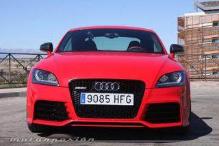
Lo admito, la mayoría de los coches que he podido probar en los últimos cuatro años en Motorpasión eran deportivos, superdeportivos o berlinas de lujo, un tipo de coches que pocas veces defraudan.
Pero si repasamos las puntuaciones finales que les he ido dando a cada uno de ellos, pocos han alcanzado el 9,5 sobre 10, la semi perfección. Uno de ellos fue hace poco más de dos años en Audi TT RS Roadster (prueba: parte 1, parte 2, parte 3 y parte 4).
Ahora que Audi ha anunciado el lanzamiento de la última evolución del TT, el RS Plus con 360 caballos, no he podido resistirme a la tentación de probar por última vez antes de su jubilación el Audi TT RS pero en versión Coupé y lo más importante de todo, con el cambio S-Tronic que incorporó hace casi dos años.
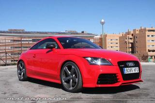
En aquel primer Audi TT RS Roadster hubo varias cosas que me encantaron: su aspecto exterior deportivo y agresivo, la calidad del interior y sus múltiples detalles lo sitúan en una posición privilegiada frente a otros coches de su segmento.
Pero sobre todo me enamoró literalmente su comportamiento dinámico. Aparte de por un chasis muy bien puesto a punto, el Audi TT RS consiguió enamorarme gracias a su fantástico motor turbo de cinco cilindros.
Desarrolla 340 caballos de potencia y me atreví en su momento a decir que es uno de los mejores motores que se han creado en los últimos años. ¿Pero que ocurre si lo combinas además con el cambio S-Tronic?
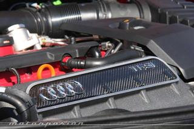
Aquel primer Audi TT RS combinaba este potente motor con una caja de cambios manual de seis velocidades, la única disponible cuando se lanzó al mercado. Aunque el funcionamiento de ésta era magnífico gracias a una palanca selectora muy precisa y a un escalonamiento de las marchas muy bien estudiado, con el S-Tronic debería mejorar .
La caja de cambios S-Tronic de doble embrague tiene siete marchas, unos desarrollos más largos que la manual y se ha reforzado debidamente para aguantar sin problemas los 450 Nm de par que entrega el motor.
Las prestaciones del Audi TT RS mejoran con ella en todos los sentidos. Primero debemos fijarnos en la aceleración. Con la caja S-Tronic acelera de 0 a 100 km/h en 4,3 segundos (4,4 segundos en el Roadster), lo que supone reducir el tiempo en tres décimas.
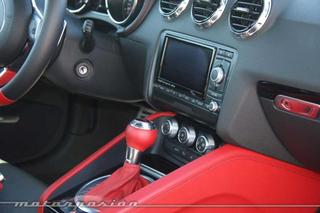
Tres décimas es mucha reducción en una aceleración así, lo cual demuestra, sobre el papel, que el S-Tronic le sienta de maravilla al pequeño TT RS. Pero no solo se quedan ahí los beneficios del S-Tronic, porque los consumos también mejoran considerablemente.
Ese fue uno de los puntos que más destaqué durante la prueba del Audi TT RS Roadster, los consumos tan reducidos que conseguimos sacar de aquel novedoso bloque de cinco cilindros turbo. Con el cambio manual Audi declara unos consumos medios de 9,2 l/100 km y yo conseguí hacerle 11,2 l/100 km sin conducir precisamente despacio.
Pues bien, la llegada del S-Tronic es la clave para bajar el consumo oficial en 0,7 l/100 km y eso se nota cuando te pones al volante. Pero dejémonos de teoría y como era este coche tan especial antes de ponernos al volante.
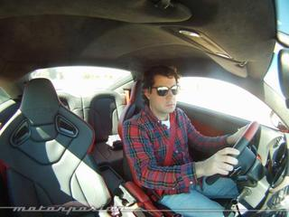
¿Cómo es el Audi TT RS S-Tronic?
Si hace ya dos años el Audi TT RS Roadster con cambio manual había conseguido marcarme, éste modelo con cambio S-Tronic debería ser la puntada final para que mi devoción por el pequeño biplaza alemán fuese total.
No voy a negar que me ha gustado, y mucho. Cuando fui a recoger el Audi TT RS al Audi Forum de Madrid, me cautivó en cuanto lo vi. Ésta unidad de pruebas venía especialmente “pintona”, y eso que las siglas RS ya suelen marcar las diferencias respecto al resto de modelos de la gama.
En éste caso la carrocería coupé iba pintada en un llamativo color rojo, que tiene un precio de 2.710 euros. Este color combina a la perfección con las llantas opcionales de 19 pulgadas en color negro, las mismas que montaba ya el Roadster y el Audi RS5 que probé en 2011 (prueba: parte 1, parte 2, parte 3 y parte 4). Cuestan 1.935 euros, pero el empaque del conjunto gana muchos enteros con ellas.
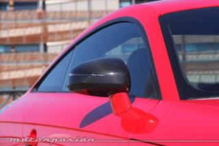
Otro detalle que me gustó fue la ausencia del exagerado alerón trasero que equipaba el Roadster. Es cierto que es una de las señas de identidad de esta versión más radical, pero yo que soy más tradicional prefiero que lleve el mismo que el resto de TT, el retráctil que se despliega a partir de 120 km/h y se esconde cuando baja de 80 km/h. Elegir uno u otro no tiene sobreprecio.
En la trasera los escapes opcionales se identifican porque el perfil va pintado en color negro, aparte claro está de por su espectacular sonido que, sobre todo a bajas revoluciones, hace que muchas cabezas se giren a su paso. Su precio es de 1.290 euros. El paquete Audi Exclusive también tiñe de negro el perfil de la parrilla delantera por 465 euros
El último detalle que marcaba la diferencia a nivel exterior, eran los espejos retrovisores. Éstos llevaban las carcasas exteriores en fibra de carbono, el preciado material que hace que inevitablemente nuestra mente se traslade a los coches de carreras. Su precio es de 1.365 euros.
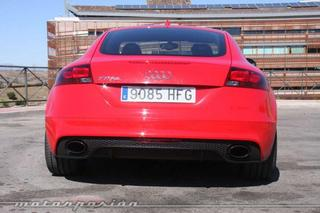
Interior llamativo, pero de calidad
Nada más abrir la puerta, el color rojo y negro de la tapicería y los paneles de las puertas destaca por encima de todo. Y es que ésta unidad de pruebas venía equipada con bastantes elementos de Audi Exclusive, de esas que pudo “catar” Javier Álvarez en la presentación en Cascais.
Los asientos baquet son opcionales y cuestan 3.680 euros. Me gustan mucho por sus formas, pero sinceramente los hubiese dejado como los opcionales que monta el RS sin el colorido rojo y negro que tenían estos.
Si optas por los baquet en el RS, éstos vienen con la inscripción TT RS en el reposacabezas y con las letras TT microperforadas en el resto de la tapicería, realmente bonita combinación. Pero con el kit Audi Exclusive los perfiles de los asientos van en color rojo, a juego con la mitad del aro del volante.
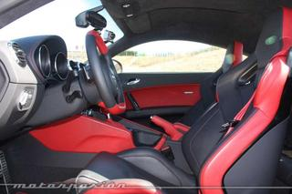
Los paneles de las puertas también iban en color rojo, con una placa Audi Exclusive que explica el porqué de ese color. El tapizado del techo iba íntegramente en tela alcántara oscura, dándole al habitáculo un aspecto de calidad y una sensación tan acogedora, que tampoco lo cambiaría por nada del mundo. Bueno si, prescindiría de él si no tengo suficiente dinero, porque cuesta 2.320 euros.
Los cinturones de seguridad también en color rojo al igual que las costuras de todo el interior son el colofón final para un interior realmente bien acabado y deportivo que te recuerda por qué este coche cuesta mucho más que otros que teóricamente son de su mismo segmento, como el Nissan 370 Z o el Hyundai Génesis Coupé.
En la parte delantera, el espacio es amplio y cómodo para dos ocupantes por muy altos que sean, ése ha sido uno de los principales cambios respecto al primer Audi TT. Pero las plazas traseras que solo están disponibles en la versión Coupé, siguen siendo anecdóticas. No recomiendo lleva a ningún adulto sentado ahí salvo que queramos torturarle, pero para una urgencia pueden llegar a salvarnos de un apuro.
Continuará...
Sun, 08 Apr 2012 16:30:27 GMT
La aerodinámica, esa gran olvidada. Regreso a Motorpasión Futuro
La aerodinámica, esa gran olvidada. Regreso a Motorpasión Futuro
En general, cuando un equipo de ingeniería se plantea crear un nuevo coche, desafortunadamente se ve obligado a plantearse la siguiente pregunta: ¿lo quiere aerodinámico o lo quiere bonito? Ya que es muy complicado encajar ambas cosas en según que tipos de carrocerías, aunque el reto está ahí, y tiene su mérito conseguirlo, o al menos conseguir un buen equilibrio (y es que no todos los coches pueden ser cupés). Les ha pasado a los japoneses de Sim Drive con su nuevo modelo de coche eléctrico, todavía prototipo, SIM-WIL. Han retocado su diseño para que sea un coche de aspecto más convencional y tenga mejor aceptación comercial, pero ha supuesto aumentar el consumo y reducir su estupenda autonomía, con respecto al primer prototipo SIM-LEI. Aún así homologa 350 km de autonomía en ciclo japonés y acelera de 0 a 100 km/h en 5,4 s. Por cierto, esta semana os hemos puesto al tanto de nuevos datos técnicos sobre el BMW i8 Concept spyder, y hemos compartido con vosotros cuatro nuevos vídeos de este todavía futurista concept car híbrido enchufable (que tiene la suerte de tener un buen equilibrio entre lo que antes os contaba). Interesante medida la de Islandia para fomentar la expansión de los vehículos eléctricos: van a quitarles el IVA (aunque con cierto límite en el precio de compra del vehículo para que tampoco sea un abuso). Hablando de vehículos eléctricos, ¿habéis visto algún backflip ejecutado con una moto eléctrica? Pues ya podéis verlo en vídeo por primera vez. Aunque todavía no hay precios para España del Toyota Prius+, monovolumen híbrido de gasolina de cinco más dos plazas (dos adicionales en una tercera fila, pero más bien para niños), ya se conocen los precios para Reino Unido con los que podemos ir haciéndonos una idea: desde 31.776 euros al cambio. La máquina curiosa de esta semana ha sido el vehículo autogiro PAL-V, un triciclo parecido al Carver One, capaz de ir por tierra inclinándose en las curvas, o bien un autogiro capaz de volar, gracias a un rotor plegable. En Espacio Renault Z.E.: Esta semana nos cuentan cómo hay que proceder si nos compramos un vehículo eléctrico y queremos instalar un punto de recarga en nuestro garaje (y sí, también en una plaza de garaje de un parking colectivo). En Motorpasión | Combustibles alternativos: una de hidrógeno y otra de bioetanol. Regreso a Motorpasión Futuro
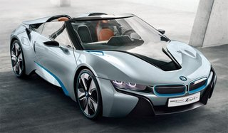
En general, cuando un equipo de ingeniería se plantea crear un nuevo coche, desafortunadamente se ve obligado a plantearse la siguiente pregunta: ¿lo quiere aerodinámico o lo quiere bonito? Ya que es muy complicado encajar ambas cosas en según que tipos de carrocerías, aunque el reto está ahí, y tiene su mérito conseguirlo, o al menos conseguir un buen equilibrio (y es que no todos los coches pueden ser cupés).
Les ha pasado a los japoneses de Sim Drive con su nuevo modelo de coche eléctrico, todavía prototipo, SIM-WIL. Han retocado su diseño para que sea un coche de aspecto más convencional y tenga mejor aceptación comercial, pero ha supuesto aumentar el consumo y reducir su estupenda autonomía, con respecto al primer prototipo SIM-LEI. Aún así homologa 350 km de autonomía en ciclo japonés y acelera de 0 a 100 km/h en 5,4 s.
Por cierto, esta semana os hemos puesto al tanto de nuevos datos técnicos sobre el BMW i8 Concept spyder, y hemos compartido con vosotros cuatro nuevos vídeos de este todavía futurista concept car híbrido enchufable (que tiene la suerte de tener un buen equilibrio entre lo que antes os contaba).
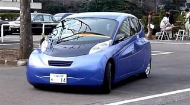
Interesante medida la de Islandia para fomentar la expansión de los vehículos eléctricos: van a quitarles el IVA (aunque con cierto límite en el precio de compra del vehículo para que tampoco sea un abuso). Hablando de vehículos eléctricos, ¿habéis visto algún backflip ejecutado con una moto eléctrica? Pues ya podéis verlo en vídeo por primera vez.
Aunque todavía no hay precios para España del Toyota Prius+, monovolumen híbrido de gasolina de cinco más dos plazas (dos adicionales en una tercera fila, pero más bien para niños), ya se conocen los precios para Reino Unido con los que podemos ir haciéndonos una idea: desde 31.776 euros al cambio.
La máquina curiosa de esta semana ha sido el vehículo autogiro PAL-V, un triciclo parecido al Carver One, capaz de ir por tierra inclinándose en las curvas, o bien un autogiro capaz de volar, gracias a un rotor plegable.
En Espacio Renault Z.E.: Esta semana nos cuentan cómo hay que proceder si nos compramos un vehículo eléctrico y queremos instalar un punto de recarga en nuestro garaje (y sí, también en una plaza de garaje de un parking colectivo).
En Motorpasión | Combustibles alternativos: una de hidrógeno y otra de bioetanol. Regreso a Motorpasión Futuro
Sun, 08 Apr 2012 14:00:08 GMT
Hay gente con mucha suerte edición XLI: unos trompos que quitan las ganas de hacer trompos nunca más
Hay gente con mucha suerte edición XLI: unos trompos que quitan las ganas de hacer trompos nunca más
Los protagonistas del día tiene algo que celebrar la próxima semana santa, y la siguiente, y las que vengan, porque están vivos de milagro. Resulta que Cuenca, aparte de ser una bonita ciudad, tiene un bonito acantilado. Sin embargo, dos chicos de unos 20 años decidieron que el miércoles no era plan irse de procesión, sino hacer unos trompitos. Próximos al precipicio, en el barrio de El Castillo, hay un aparcamiento en una gran explanada. En determinado momento, el conductor perdió el control —aunque él “controlaba”— y comenzaron su viaje hacia el cielo, por la vía rápida… Cayeron unos 70 metros, pero tuvieron una suerte providencial. No sabemos si la Virgen les fue a ver o no, pero el coche —parece un Opel Astra— se quedó enganchado en las rocas. Los bomberos, policía y sanitarios los consiguieron sacar del asiento trasero con heridas leves, donde habían terminado, en un espectacular rescate digno de película de Bruce Willis, casi en vertical. El rescate duró hora y media, ocurrió el pasado miércoles en las primeras horas del día. Seguro que nuestros amigos no volverán a hacer el tonto, desde luego hay gente con mucha suerte. Su semana santa se ha convertido en semana santísima, de pasión, muerte y resurrección en cuestión de segundos. Un saludo bendecido para Carlos R. Fuente e imagen adicional | El Día Digital En Motorpasión | Hay gente con mucha suerte
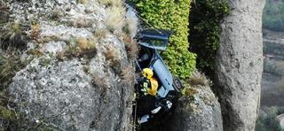
Los protagonistas del día tiene algo que celebrar la próxima semana santa, y la siguiente, y las que vengan, porque están vivos de milagro. Resulta que Cuenca, aparte de ser una bonita ciudad, tiene un bonito acantilado. Sin embargo, dos chicos de unos 20 años decidieron que el miércoles no era plan irse de procesión, sino hacer unos trompitos.
Próximos al precipicio, en el barrio de El Castillo, hay un aparcamiento en una gran explanada. En determinado momento, el conductor perdió el control —aunque él “controlaba”— y comenzaron su viaje hacia el cielo, por la vía rápida… Cayeron unos 70 metros, pero tuvieron una suerte providencial.
No sabemos si la Virgen les fue a ver o no, pero el coche —parece un Opel Astra— se quedó enganchado en las rocas. Los bomberos, policía y sanitarios los consiguieron sacar del asiento trasero con heridas leves, donde habían terminado, en un espectacular rescate digno de película de Bruce Willis, casi en vertical.
El rescate duró hora y media, ocurrió el pasado miércoles en las primeras horas del día. Seguro que nuestros amigos no volverán a hacer el tonto, desde luego hay gente con mucha suerte. Su semana santa se ha convertido en semana santísima, de pasión, muerte y resurrección en cuestión de segundos.
Un saludo bendecido para Carlos R.
Fuente e imagen adicional | El Día Digital
En Motorpasión | Hay gente con mucha suerte
Sun, 08 Apr 2012 06:00:00 GMT
Stavros Grillis, derrapando desde los 9 años
Stavros Grillis, derrapando desde los 9 años
La mayoría de los mortales aprendemos a conducir un coche cuando tenemos en torno a los 18 años y tenemos que sacarnos el carnet de conducir. Pero esta va a ser la tercera ocasión en que escribo sobre menores al volante en Motorpasión. Recordaréis que hemos hablado de ello cuando en Holanda se había creado una escuela de conducción para niños de 10 años, o cuando os mostré a un niño de 10 años al volante de un Porsche 911 GT3 RS. Pero en esta ocasión vamos a hablar de un niño todavía más jóven llamado Stavros Grillis. Con solo 9 años de edad es piloto de drifting en Grecia. Maneja el BMW Serie 3 con el que entrena a la perfección, se le ve soltura y según dicen lleva dos años practicando el drifting. Tal vez de aquí a unos años Stavros Grillis sea el mayor rival a nivel mundial de Ken Block. Años de experiencia seguro que no le faltan… Vía | GT Spirit En Motorpasión | Un niño de 10 años al volante de un Porsche 911 GT3 RS
La mayoría de los mortales aprendemos a conducir un coche cuando tenemos en torno a los 18 años y tenemos que sacarnos el carnet de conducir. Pero esta va a ser la tercera ocasión en que escribo sobre menores al volante en Motorpasión.
Recordaréis que hemos hablado de ello cuando en Holanda se había creado una escuela de conducción para niños de 10 años, o cuando os mostré a un niño de 10 años al volante de un Porsche 911 GT3 RS. Pero en esta ocasión vamos a hablar de un niño todavía más jóven llamado Stavros Grillis.
Con solo 9 años de edad es piloto de drifting en Grecia. Maneja el BMW Serie 3 con el que entrena a la perfección, se le ve soltura y según dicen lleva dos años practicando el drifting. Tal vez de aquí a unos años Stavros Grillis sea el mayor rival a nivel mundial de Ken Block. Años de experiencia seguro que no le faltan…
Vía | GT Spirit
En Motorpasión | Un niño de 10 años al volante de un Porsche 911 GT3 RS
Sat, 07 Apr 2012 21:02:14 GMT
El SRT Viper esconde los trazados de Nürburgring y Laguna Seca
El SRT Viper esconde los trazados de Nürburgring y Laguna Seca
¿Qué tienen en común los circuitos de Nürburgring y Laguna Seca? Ambos tienen curvas únicas en sus trazados y ambos sirven de campo de pruebas para numerosos fabricantes de vehículos deportivos, que riñen con la competencia para conseguir los mejores tiempos. El nuevo SRT Viper 2013 llega con un par de ases bajo la manga en forma de guiños hacia estos dos famosos circuitos. Tanto el conocido “sacacorchos” de Laguna Seca como el Karussell del Infierno Verde tienen su pequeño espacio en el SRT. El SRT Viper 2013 no sólo esconde un V10 de 649 CV de potencia, también los trazados de estos dos conocidas pistas de carreras. El del Nordschleife se encuentra en un hueco junto al botón del elevalunas (en la imagen) y el de Laguna Seca adorna la superficie antideslizante de la parte baja de la consola central. ¿Conquistará el nuevo SRT Viper los dos famosos circuitos de carreras? Vía | Auto Evolution En Motorpasión | 2013 SRT Viper
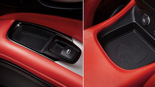
¿Qué tienen en común los circuitos de Nürburgring y Laguna Seca? Ambos tienen curvas únicas en sus trazados y ambos sirven de campo de pruebas para numerosos fabricantes de vehículos deportivos, que riñen con la competencia para conseguir los mejores tiempos.
El nuevo SRT Viper 2013 llega con un par de ases bajo la manga en forma de guiños hacia estos dos famosos circuitos. Tanto el conocido “sacacorchos” de Laguna Seca como el Karussell del Infierno Verde tienen su pequeño espacio en el SRT.
El SRT Viper 2013 no sólo esconde un V10 de 649 CV de potencia, también los trazados de estos dos conocidas pistas de carreras. El del Nordschleife se encuentra en un hueco junto al botón del elevalunas (en la imagen) y el de Laguna Seca adorna la superficie antideslizante de la parte baja de la consola central.
¿Conquistará el nuevo SRT Viper los dos famosos circuitos de carreras?
Vía | Auto Evolution
En Motorpasión | 2013 SRT Viper
Sat, 07 Apr 2012 13:00:00 GMT
SP91-R 425, el Porsche 911 Carrera S de Speedart
SP91-R 425, el Porsche 911 Carrera S de Speedart
Desde que saliera al mercado el nuevo Porsche 911 (991) ya son varios los preparadores que se han atrevido a “meterle mano”. Hoy os traemos el SP91-R 425, una preparación del especialista en modelos de Stuttgart, Speedart, sobre un 911 Carrera S. Para empezar, el SP91-R luce un paquete aerodinámico con spoiler delantero, taloneras de nueva factura, alerón de una sola pieza y un difusor para el paragolpes trasero. Las llantas ligeras LSC-Forged de 21 pulgadas se ofrecen en tres acabados diferentes (plata, negro mate o gunmetal). Mediante cambios electrónicos en la gestión del seis cilindros bóxer, Speedart puede aumentar la potencia del Carrera S en casi 26 CV, elevando también el par motor máximo en 35 Nm. Junto a esta mejora el preparador ofrece también un sistema de frenos acorde al aumento de potencia con discos de 380 milímetros (y pinzas de cuatro y seis pistones). El preparador ofrece también varias opciones para la suspensión, como muelles más cortos o un sistema de suspensión totalmente ajustable de tipo coilover. El sistema airlift que eleva el morro del vehículo para salvar badenes y baches también forma parte de la oferta opcional. En el interior encontramos una tapicería en combinación de cuero y alcántara con costuras en patrón de diamantes, incluso en el volante. Galería de fotos (Haz click en una imagen para ampliarla)
Vía | German Car Scene En Motorpasión | speedART speedHYBRID 450, el Porsche Cayenne S Hybrid también recibe lo suyo
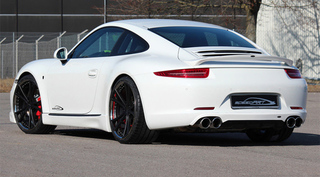
Desde que saliera al mercado el nuevo Porsche 911 (991) ya son varios los preparadores que se han atrevido a “meterle mano”. Hoy os traemos el SP91-R 425, una preparación del especialista en modelos de Stuttgart, Speedart, sobre un 911 Carrera S.
Para empezar, el SP91-R luce un paquete aerodinámico con spoiler delantero, taloneras de nueva factura, alerón de una sola pieza y un difusor para el paragolpes trasero. Las llantas ligeras LSC-Forged de 21 pulgadas se ofrecen en tres acabados diferentes (plata, negro mate o gunmetal).
Mediante cambios electrónicos en la gestión del seis cilindros bóxer, Speedart puede aumentar la potencia del Carrera S en casi 26 CV, elevando también el par motor máximo en 35 Nm. Junto a esta mejora el preparador ofrece también un sistema de frenos acorde al aumento de potencia con discos de 380 milímetros (y pinzas de cuatro y seis pistones).
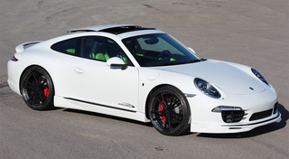
El preparador ofrece también varias opciones para la suspensión, como muelles más cortos o un sistema de suspensión totalmente ajustable de tipo coilover. El sistema airlift que eleva el morro del vehículo para salvar badenes y baches también forma parte de la oferta opcional.
En el interior encontramos una tapicería en combinación de cuero y alcántara con costuras en patrón de diamantes, incluso en el volante.
Galería de fotos
(Haz click en una imagen para ampliarla)
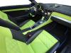
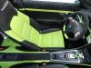
Vía | German Car Scene
En Motorpasión | speedART speedHYBRID 450, el Porsche Cayenne S Hybrid también recibe lo suyo
Sat, 07 Apr 2012 11:00:00 GMT
Past Glory, la magia de Amelia Island Concours d'Elegance
Past Glory, la magia de Amelia Island Concours d'Elegance
¿Qué tienen los deportivos clásicos que tantas pasiones levantan? No todo en esta vida son Dolorpasión™, así que hoy, aunque sea sábado, os propongo una buena manera de pasar diez minutos y de paso contrarrestar de golpe y porrazo los efectos de varias semanas de Dolorpasión™ con este vídeo “porno”. Se trata de un vídeo grabado por Justin Lapriore, un lector de CarScoop, que dedicó el segundo fin de semana del pasado mes de marzo a perseguir varios Ferrari 250 GTO por Amelia Island, en Florida, donde se celebra el conocido Concours d’Elegance. En el vídeo se pueden ver algunas de las joyas que fueron exhibidas en el Concours d’Elegance de Amelia Island. Junto a los Ferrari 250 GTO, que se llevaron todo el protagonismo, también se pueden ver otros clásicos muy apetecibles. Os dejo con el vídeo, que no tiene desperdicio. Vía | Car Scoop
¿Qué tienen los deportivos clásicos que tantas pasiones levantan? No todo en esta vida son Dolorpasión™, así que hoy, aunque sea sábado, os propongo una buena manera de pasar diez minutos y de paso contrarrestar de golpe y porrazo los efectos de varias semanas de Dolorpasión™ con este vídeo “porno”.
Se trata de un vídeo grabado por Justin Lapriore, un lector de CarScoop, que dedicó el segundo fin de semana del pasado mes de marzo a perseguir varios Ferrari 250 GTO por Amelia Island, en Florida, donde se celebra el conocido Concours d’Elegance.
En el vídeo se pueden ver algunas de las joyas que fueron exhibidas en el Concours d’Elegance de Amelia Island. Junto a los Ferrari 250 GTO, que se llevaron todo el protagonismo, también se pueden ver otros clásicos muy apetecibles. Os dejo con el vídeo, que no tiene desperdicio.
Vía | Car Scoop
Sat, 07 Apr 2012 08:00:00 GMT
La manía de pitar en los semáforos y la respuesta coherente
La manía de pitar en los semáforos y la respuesta coherente
Entremos en situación. Se pone el semáforo en verde y, como si alguien por ahí atrás estuviera conmutado con la señal luminosa, le da un toque al claxon de su coche. ¿Nunca os ha ocurrido? A mí, sí, y es algo que no soporto, la verdad. De hecho… bueno, si acaso esto que iba a decir me lo guardo mejor para un fauna en ruta, que tiene miga. Lo que hoy os presentamos es la plasmación en puro vídeo de los sueños que ha tenido más de un conductor al oír el pitido cuando el semáforo pasa a verde. Y no hablo de una larga pitada ni de un pitido breve, sino de un término medio. De esos a los que oyes pitar y piensas: “pues vale”. Pero se ve que al que protagoniza el vídeo no le vale ni le gusta, porque su reacción es digna de atención. Será que no soporto el uso que muchos le dan al claxon, pero hasta cierto punto puedo entender cómo se lo toma el hombre este, ni que sea por todos los dibujos animados que he visto en la vida. ¿Habría ocurrido lo mismo si en vez de pitarle le hubiesen dado unas inofensivas ráfagas? Vale, el vídeo es de un fake que tira para atrás, pero no me diréis que nunca habéis tenido tentaciones de este tipo. ¿O será que me han entrado ganas de imitar a Jack Torrance en la peli ‘El Resplandor’? Nótese el uso de la etiqueta “humor”, que si no alguno es capaz de denunciarme o algo. Vídeo | StaryGolf (YouTube)Un saludo para Manolo, y gracias por la pista
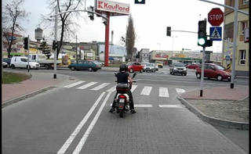
Entremos en situación. Se pone el semáforo en verde y, como si alguien por ahí atrás estuviera conmutado con la señal luminosa, le da un toque al claxon de su coche. ¿Nunca os ha ocurrido? A mí, sí, y es algo que no soporto, la verdad. De hecho… bueno, si acaso esto que iba a decir me lo guardo mejor para un fauna en ruta, que tiene miga.
Lo que hoy os presentamos es la plasmación en puro vídeo de los sueños que ha tenido más de un conductor al oír el pitido cuando el semáforo pasa a verde. Y no hablo de una larga pitada ni de un pitido breve, sino de un término medio. De esos a los que oyes pitar y piensas: “pues vale”. Pero se ve que al que protagoniza el vídeo no le vale ni le gusta, porque su reacción es digna de atención.
Será que no soporto el uso que muchos le dan al claxon, pero hasta cierto punto puedo entender cómo se lo toma el hombre este, ni que sea por todos los dibujos animados que he visto en la vida. ¿Habría ocurrido lo mismo si en vez de pitarle le hubiesen dado unas inofensivas ráfagas?
Vale, el vídeo es de un fake que tira para atrás, pero no me diréis que nunca habéis tenido tentaciones de este tipo. ¿O será que me han entrado ganas de imitar a Jack Torrance en la peli ‘El Resplandor’? Nótese el uso de la etiqueta “humor”, que si no alguno es capaz de denunciarme o algo.
Vídeo | StaryGolf (YouTube)
Un saludo para Manolo, y gracias por la pista
Fri, 06 Apr 2012 13:15:00 GMT
La última criatura de Jon Olsson
La última criatura de Jon Olsson
¿Por qué no ir a esquiar en un Audi R8 LMS de calle? Es lo que debió pensar Jon Olsson, el esquiador sueco que además de tener en su poder nueve medallas de los X-Games de invierno, ahora también tiene un Audi R8 negro preparado por PPI con el que irse a esquiar. Hace ya varios años pudimos ver a Olsson con un Lamborghini Murciélago LP670-4 en la Gumball 3000 e incluso conocimos su Lamborghini Gallardo LP560-4 de camuflaje, especialmente preparado para cargar sus esquíes. No obstante, el sueco quería algo más especial, quería un Audi R8 “de carreras” apto para la carretera. Olsson nos muestra a través de su blog personal su nuevo Audi R8 V10 preparado por PPI, con carrocería ensanchada de fibra de carbono, llantas ADV.1 y mejoras en el propulsor que aumenta su potencia, gracias a un compresor, de los 525 CV de serie hasta los 720 CV (y 709 Nm de par máximo). Lo mejor de todo es que el nuevo alerón trasero le sirve de soporte para el portaesquíes, también de carbono. Vía | GT Spirit En Motorpasión | PPI Razor GTR: el Audi R8 más radical
¿Por qué no ir a esquiar en un Audi R8 LMS de calle? Es lo que debió pensar Jon Olsson, el esquiador sueco que además de tener en su poder nueve medallas de los X-Games de invierno, ahora también tiene un Audi R8 negro preparado por PPI con el que irse a esquiar.
Hace ya varios años pudimos ver a Olsson con un Lamborghini Murciélago LP670-4 en la Gumball 3000 e incluso conocimos su Lamborghini Gallardo LP560-4 de camuflaje, especialmente preparado para cargar sus esquíes. No obstante, el sueco quería algo más especial, quería un Audi R8 “de carreras” apto para la carretera.
Olsson nos muestra a través de su blog personal su nuevo Audi R8 V10 preparado por PPI, con carrocería ensanchada de fibra de carbono, llantas ADV.1 y mejoras en el propulsor que aumenta su potencia, gracias a un compresor, de los 525 CV de serie hasta los 720 CV (y 709 Nm de par máximo). Lo mejor de todo es que el nuevo alerón trasero le sirve de soporte para el portaesquíes, también de carbono.
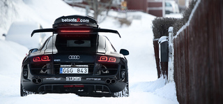
Vía | GT Spirit
En Motorpasión | PPI Razor GTR: el Audi R8 más radical
Fri, 06 Apr 2012 09:02:24 GMT
Ford y PSA no colaborarán más en motores diesel grandes
Ford y PSA no colaborarán más en motores diesel grandes
Ford Focus y Citroën C4, con motores diesel 1.6 comunes En los últimos 12 años, el 75% de los motores diesel que se han fabricado tanto en Ford como en PSA Peugeot-Citroën, fueron desarrollados en común mediante una joint-venture. Dicha unión, que ha sido tan fructífera, se ha terminado de forma parcial. A partir de los 2 litros de cilindrada hacia arriba, los desarrollos se harán por separado. Los desarrollos en motores de 1.4 y 1.6 litros seguirá como hasta ahora, y según confirman portavoces de ambas empresas, no tiene nada que ver con la alianza entre PSA y General Motors. Por lo visto, ya se venía macerando la separación desde antes, y de forma bilateral. Nos lo tendremos que creer. Hasta septiembre de 2015 no aparecerán los motores desarrollados por separado, que es cuando los vehículos industriales de más de 1.305 kg necesitan cumplir con Euro 6. Para los turismos y VI más ligeros, Euro 6 entra en vigor en 2014. Podemos suponer, por tanto, que la siguiente generación de motores Euro 6 no solamente está en marcha, sino que saldrá de forma conjunta. Peugeot 407 Coupé, con motor 2.7 V6 PSA-Ford ¿Por qué estas alianzas? Dichos motores de 2 litros hacia arriba se utilizan —entre otros— en C4, C5 y C8 por parte de Citroën, en Focus, Mondeo, C-MAX, S-MAX, Galaxy y Kuga por parte de Ford y en los Peugeot 308, 407, 508. Recordemos que todos los motores actuales Euro 5 deben adaptarse para Euro 6 por imperativo legal. Dicho imperativo legal exige costosas inversiones por parte de los fabricantes, así que lo normal es que haya alianzas para repartir esta carga a medias. De Euro 5 a Euro 6, en motores Diesel, hay que reducir aún más las emisiones de óxidos de nitrógeno (NOx) e hidrocarburos sin quemar (HC). Respecto a las partículas, existe el mismo límite de 5 mg/km que en Euro 5, pero aquí viene el problemón, y es que los fabricantes tendrán la obligación de contar el número de partículas que emitan en cada coche. A nivel de ingeniería, es algo realmente difícil. Opel Vectra, con motor 1.9 GM-Fiat Otro ejemplo de alianzas en este sentido la encontramos con Toyota, que pactó con Ford un trueque tecnología híbrida a cambio de tecnología Diesel. Ahora los japoneses se han aliado con BMW para que los alemanes suministren motores de gasóleo para la generación Euro 6, y así los japoneses se ahorran dinero. También muchos conocerán la famosa alianza entre el Grupo Fiat y General Motors, que dio lugar a la generación Euro 4 (únicamente) de motores diesel desarrollados en común. Es un negocio muy provechoso, se abarata el desarrollo, la fabricación y todo lo demás, y el cliente o no encuentra la diferencia, o le da lo mismo. Luego cada marca hace sus propios ajustes, por ejemplo a nivel de inyección. Por ejemplo, el Fiat Grande Punto y el Opel Corsa (90 CV Euro 4 en ambos casos, mediados de 2006) no iban igual. El Multijet era un muerto a menos de 1.500 RPM, pero a cambio pegaba un segundo estirón a 3.000 RPM que el CDTI no entregaba. Citroën C5, con motor 2.2 PSA-Ford La legislación va siempre por delante Hasta la llegada de las normas Euro, desarrollar motores era relativamente fácil, porque no había que hacer tantos esfuerzos para reducir la toxicidad de las emisiones. Pero los motores diesel cada vez tienen que ser más limpios, y han tenido que recurrir a las válvulas EGR, catalizadores, filtros de partículas, etc. Una de las tecnologías que seguramente veremos en muchos motores Euro 6 es la reducción catalítica selectiva (SCR), que consiste en inyectar urea en el aire ya quemado, para reaccionar con él y producir gases menos tóxicos. Esto ya podemos verlo en los motores Clean Diesel (BMW, Daimler y VAG) que operan en Estados Unidos. La normativa de emisiones de California, la más dura de los Estados Unidos, obligó a los fabricantes a adelantar sus deberes. Esos motores seguramente ya cumplen Euro 6, pero se venden los motores Euro 5 en Europa. Los fabricantes retrasan todo lo posible la adopción de los motores más limpios, principalmente por motivos de costes o tiempos de desarrollo. Vía | Automotive News En Motorpasión | Es oficial: GM y PSA sellan su alianza
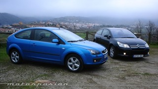Ford Focus y Citroën C4, con motores diesel 1.6 comunes
En los últimos 12 años, el 75% de los motores diesel que se han fabricado tanto en Ford como en PSA Peugeot-Citroën, fueron desarrollados en común mediante una joint-venture. Dicha unión, que ha sido tan fructífera, se ha terminado de forma parcial. A partir de los 2 litros de cilindrada hacia arriba, los desarrollos se harán por separado.
Los desarrollos en motores de 1.4 y 1.6 litros seguirá como hasta ahora, y según confirman portavoces de ambas empresas, no tiene nada que ver con la alianza entre PSA y General Motors. Por lo visto, ya se venía macerando la separación desde antes, y de forma bilateral. Nos lo tendremos que creer.
Hasta septiembre de 2015 no aparecerán los motores desarrollados por separado, que es cuando los vehículos industriales de más de 1.305 kg necesitan cumplir con Euro 6. Para los turismos y VI más ligeros, Euro 6 entra en vigor en 2014. Podemos suponer, por tanto, que la siguiente generación de motores Euro 6 no solamente está en marcha, sino que saldrá de forma conjunta.
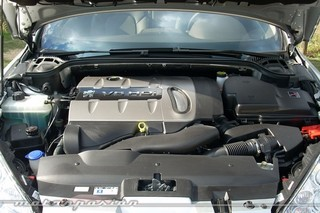Peugeot 407 Coupé, con motor 2.7 V6 PSA-Ford
¿Por qué estas alianzas?
Dichos motores de 2 litros hacia arriba se utilizan —entre otros— en C4, C5 y C8 por parte de Citroën, en Focus, Mondeo, C-MAX, S-MAX, Galaxy y Kuga por parte de Ford y en los Peugeot 308, 407, 508. Recordemos que todos los motores actuales Euro 5 deben adaptarse para Euro 6 por imperativo legal.
Dicho imperativo legal exige costosas inversiones por parte de los fabricantes, así que lo normal es que haya alianzas para repartir esta carga a medias. De Euro 5 a Euro 6, en motores Diesel, hay que reducir aún más las emisiones de óxidos de nitrógeno (NOx) e hidrocarburos sin quemar (HC).
Respecto a las partículas, existe el mismo límite de 5 mg/km que en Euro 5, pero aquí viene el problemón, y es que los fabricantes tendrán la obligación de contar el número de partículas que emitan en cada coche. A nivel de ingeniería, es algo realmente difícil.
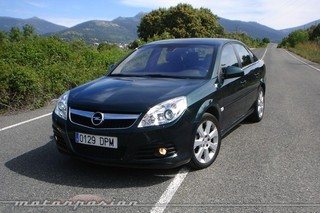Opel Vectra, con motor 1.9 GM-Fiat
Otro ejemplo de alianzas en este sentido la encontramos con Toyota, que pactó con Ford un trueque tecnología híbrida a cambio de tecnología Diesel. Ahora los japoneses se han aliado con BMW para que los alemanes suministren motores de gasóleo para la generación Euro 6, y así los japoneses se ahorran dinero.
También muchos conocerán la famosa alianza entre el Grupo Fiat y General Motors, que dio lugar a la generación Euro 4 (únicamente) de motores diesel desarrollados en común. Es un negocio muy provechoso, se abarata el desarrollo, la fabricación y todo lo demás, y el cliente o no encuentra la diferencia, o le da lo mismo.
Luego cada marca hace sus propios ajustes, por ejemplo a nivel de inyección. Por ejemplo, el Fiat Grande Punto y el Opel Corsa (90 CV Euro 4 en ambos casos, mediados de 2006) no iban igual. El Multijet era un muerto a menos de 1.500 RPM, pero a cambio pegaba un segundo estirón a 3.000 RPM que el CDTI no entregaba.
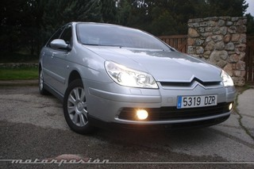Citroën C5, con motor 2.2 PSA-Ford
La legislación va siempre por delante
Hasta la llegada de las normas Euro, desarrollar motores era relativamente fácil, porque no había que hacer tantos esfuerzos para reducir la toxicidad de las emisiones. Pero los motores diesel cada vez tienen que ser más limpios, y han tenido que recurrir a las válvulas EGR, catalizadores, filtros de partículas, etc.
Una de las tecnologías que seguramente veremos en muchos motores Euro 6 es la reducción catalítica selectiva (SCR), que consiste en inyectar urea en el aire ya quemado, para reaccionar con él y producir gases menos tóxicos. Esto ya podemos verlo en los motores Clean Diesel (BMW, Daimler y VAG) que operan en Estados Unidos.
La normativa de emisiones de California, la más dura de los Estados Unidos, obligó a los fabricantes a adelantar sus deberes. Esos motores seguramente ya cumplen Euro 6, pero se venden los motores Euro 5 en Europa. Los fabricantes retrasan todo lo posible la adopción de los motores más limpios, principalmente por motivos de costes o tiempos de desarrollo.
Vía | Automotive News
En Motorpasión | Es oficial: GM y PSA sellan su alianza
Fri, 06 Apr 2012 06:00:00 GMT
Mercedes GLK 2013, presentado en el Salón de Nueva York
Mercedes GLK 2013, presentado en el Salón de Nueva York
El Mercedes-Benz Clase GLK se vende en España desde 2008, así que la marca alemana ha decidido poner al día este modelo, al igual que ha hecho, también coincidiendo con el Salón del Automóvil de Nueva York, con el Mercedes-Benz Clase GL. Los cambios son parecidos a los que ha sufrido su hermano mayor, aunque gracias a que el Mercedes-Benz GLK es más moderno, estos se notan menos, especialmente en el exterior del vehículo donde las diferencias son pequeñas. En realidad cambia ligeramente la parrilla delantera, y el diseño de los faros, que tienen diferente diseño en función del tipo de iluminación que elijamos. En la parte trasera nos encontraremos con un nuevo paragolpes, cuya parte inferior aparece ahora cromada. Por otro lado, también podremos escoger a partir de ahora un paquete de equipamiento exterior denominado AMG Sports Package, que incluye paragolpes de diseño más deportivo y llantas específicas de 19 pulgadas de 5 radios. Además los modelos equipados con este paquete cuentan con suspensión deportiva. Cambios en el interior del Mercedes-Benz GLK
Vistas las modificaciones en el exterior del vehículo, toca ahora ver qué se ha cambiado en el interior, que no ha sido poco. Como decíamos al principio, al ser un modelo que empezó a comercializarse en 2008, la diferencia no es tan acusada como en el caso del Mercedes-Benz GL, pero existe. De nuevo, la línea a seguir la marca el Mercedes-Benz Clase B. La primera diferencia que podemos ver es que las salidas de aire del sistema de climatización son diferentes. En lugar de las salidas cuadradas y simplonas del anterior modelo, el nuevo luce unas salidas en forma de aspa mucho más llamativas. Esto puede gustar o no, pero que duda cabe que cambia mucho la percepción del interior. Por otro lado el volante, aunque tiene el mismo esquema básico, tiene ahora un radio cromado y dividido en dos secciones, y además el aro tiene unas formas más marcadas para que sea más fácil adaptar las manos a él. Además, casi todos los botones de la consola central han sido modificados, de manera que ahora son más grandes, y además, no quedan rasos respecto a la consola. Me parece importante que esto sea así, ya que en realidad creo que no es una cuestión de diseño, si no de ergonomía. En mi opinión, en la anterior generación, resultaba difícil accionar un botón si se iba conduciendo si no se apartaba la mirada de la carretera algunos segundos, ya que era difícil palpar los botones. Con la nueva forma creo que es muy posible que esto ya no se así. No obstante hasta que no probemos el modelo no podemos decirlo con seguridad. Lo que también ha cambiado en la pantalla que alberga el cuadro de mandos. La anterior era monocroma, mientras que la nueva es de mayor tamaño, más resolución y en color. Equipamiento puesto al día La versión 2013 puede llevar gracias a esta puesta al día algunos sistemas que hasta ahora no estaban disponibles. La mayoría de ellos son sistemas de seguridad, confort o multimedia. Concretamente, el Mercedes-Benz GLK puede lleva el sistema Attention Assit (comprueba el nivel de atención del conductor para avisarle si este es bajo), el asistente de aparcamiento Active Parking Assist, o el programador de velocidad activo Distronic Plus. También puede montar, opcionalmente, el avisador de cambio involuntario de carril Active Lane Keeping Assist o asistente de vehículo en ángulo muerto Active Blind Spot Assist. Motorizaciones del Mercedes-Benz GLK
La gama de motores que ha sido aunciada corresponde a la que estará disponible en Estados Unidos, por lo que en su versión europea, sin duda, habrá algunos cambios significativos. No obstante, la principal novedad, ya que los motores son básicamente los mismos, es que se introduce un motor diesel (350 DCI 4MATIC BlueEFFICIENCYI V6 de más potente (265 CV), y dos diesel que cumplen Euro 6 gracias a la tecnología AdBlue (basada en el tratamiento con urea). Las cifras de consumo declaradas mejoran en todos los casos (especialmente en el motor gasolina) algunas décimas. No obstante, todos los datos han seguido el ciclo NEDC de consumo, por lo que no son homologables con los consumos europeos. Por tanto, los motores disponibles son los siguientes: 200 CDI BlueEFFICIENCY (143 CV), 220 CDI BlueEFFICIENCY (170 CV), 220 CDI 4MATIC BlueEFFICIENCY (170 CV), 220 BlueTEC 4MATIC (170 CV), 220 BlueTEC 4MATIC (204 CV), 350 CDI 4MATIC BlueEFFICIENCY (265 CV) y un único gasolina, 350 4MATIC BlueEFFICIENCY (306 CV). Hasta aquí la información, no lo olvidemos, para el modelo americano. Pronto se sabrá cómo será el modelo que veremos por Europa, así que no os lo perdáis. Mercedes-Benz GLK 2012 (Haz click en una imagen para ampliarla)
En Motorpasión | Mercedes-Benz Clase GL 2013
.jpg)
El Mercedes-Benz Clase GLK se vende en España desde 2008, así que la marca alemana ha decidido poner al día este modelo, al igual que ha hecho, también coincidiendo con el Salón del Automóvil de Nueva York, con el Mercedes-Benz Clase GL.
Los cambios son parecidos a los que ha sufrido su hermano mayor, aunque gracias a que el Mercedes-Benz GLK es más moderno, estos se notan menos, especialmente en el exterior del vehículo donde las diferencias son pequeñas.
En realidad cambia ligeramente la parrilla delantera, y el diseño de los faros, que tienen diferente diseño en función del tipo de iluminación que elijamos. En la parte trasera nos encontraremos con un nuevo paragolpes, cuya parte inferior aparece ahora cromada.
.jpg)
Por otro lado, también podremos escoger a partir de ahora un paquete de equipamiento exterior denominado AMG Sports Package, que incluye paragolpes de diseño más deportivo y llantas específicas de 19 pulgadas de 5 radios. Además los modelos equipados con este paquete cuentan con suspensión deportiva.
Cambios en el interior del Mercedes-Benz GLK
Vistas las modificaciones en el exterior del vehículo, toca ahora ver qué se ha cambiado en el interior, que no ha sido poco. Como decíamos al principio, al ser un modelo que empezó a comercializarse en 2008, la diferencia no es tan acusada como en el caso del Mercedes-Benz GL, pero existe.
De nuevo, la línea a seguir la marca el Mercedes-Benz Clase B. La primera diferencia que podemos ver es que las salidas de aire del sistema de climatización son diferentes. En lugar de las salidas cuadradas y simplonas del anterior modelo, el nuevo luce unas salidas en forma de aspa mucho más llamativas. Esto puede gustar o no, pero que duda cabe que cambia mucho la percepción del interior.
.jpg)
Por otro lado el volante, aunque tiene el mismo esquema básico, tiene ahora un radio cromado y dividido en dos secciones, y además el aro tiene unas formas más marcadas para que sea más fácil adaptar las manos a él.
Además, casi todos los botones de la consola central han sido modificados, de manera que ahora son más grandes, y además, no quedan rasos respecto a la consola. Me parece importante que esto sea así, ya que en realidad creo que no es una cuestión de diseño, si no de ergonomía.
En mi opinión, en la anterior generación, resultaba difícil accionar un botón si se iba conduciendo si no se apartaba la mirada de la carretera algunos segundos, ya que era difícil palpar los botones. Con la nueva forma creo que es muy posible que esto ya no se así. No obstante hasta que no probemos el modelo no podemos decirlo con seguridad.
.jpg)
Lo que también ha cambiado en la pantalla que alberga el cuadro de mandos. La anterior era monocroma, mientras que la nueva es de mayor tamaño, más resolución y en color.
Equipamiento puesto al día
La versión 2013 puede llevar gracias a esta puesta al día algunos sistemas que hasta ahora no estaban disponibles. La mayoría de ellos son sistemas de seguridad, confort o multimedia.
Concretamente, el Mercedes-Benz GLK puede lleva el sistema Attention Assit (comprueba el nivel de atención del conductor para avisarle si este es bajo), el asistente de aparcamiento Active Parking Assist, o el programador de velocidad activo Distronic Plus.
.jpg)
También puede montar, opcionalmente, el avisador de cambio involuntario de carril Active Lane Keeping Assist o asistente de vehículo en ángulo muerto Active Blind Spot Assist.
Motorizaciones del Mercedes-Benz GLK
La gama de motores que ha sido aunciada corresponde a la que estará disponible en Estados Unidos, por lo que en su versión europea, sin duda, habrá algunos cambios significativos.
No obstante, la principal novedad, ya que los motores son básicamente los mismos, es que se introduce un motor diesel (350 DCI 4MATIC BlueEFFICIENCYI V6 de más potente (265 CV), y dos diesel que cumplen Euro 6 gracias a la tecnología AdBlue (basada en el tratamiento con urea).
-1.jpg)
Las cifras de consumo declaradas mejoran en todos los casos (especialmente en el motor gasolina) algunas décimas. No obstante, todos los datos han seguido el ciclo NEDC de consumo, por lo que no son homologables con los consumos europeos.
Por tanto, los motores disponibles son los siguientes: 200 CDI BlueEFFICIENCY (143 CV), 220 CDI BlueEFFICIENCY (170 CV), 220 CDI 4MATIC BlueEFFICIENCY (170 CV), 220 BlueTEC 4MATIC (170 CV), 220 BlueTEC 4MATIC (204 CV), 350 CDI 4MATIC BlueEFFICIENCY (265 CV) y un único gasolina, 350 4MATIC BlueEFFICIENCY (306 CV).
Hasta aquí la información, no lo olvidemos, para el modelo americano. Pronto se sabrá cómo será el modelo que veremos por Europa, así que no os lo perdáis.
Mercedes-Benz GLK 2012
(Haz click en una imagen para ampliarla)
En Motorpasión | Mercedes-Benz Clase GL 2013
Fri, 06 Apr 2012 04:00:00 GMT
El mal estado de las carreteras, denunciado por la AEC
El mal estado de las carreteras, denunciado por la AEC
5.500 millones de euros costaría hoy poner en solfa el lamentable estado de la red viaria española, tanto en carreteras estatales como en autonómicas, a tenor de lo observado por la Asociación Española de la Carretera (AEC), que acaba de emitir su balance sobre el estado de nuestras vías y les ha puesto una calificación poco menos que desastrosa. 320.000 señales verticales deterioradas, 50.000 marcas viales que hay que repintar sí o sí, barreras metálicas que están hechas un asco y hasta un 21 % de las farolas, que no alumbran porque están apagadas. Ese es el balance del estudio realizado, que aborda el 90 % de los 165.000 kilómetros de carreteras que tenemos en España. ¿Dónde ha ido el dinero necesario para el mantenimiento de las infraestructuras? Miguel María Muñoz, que fue director general de la DGT entre 1988 y 1996 y hoy preside la AEC, lo tiene clarísimo. En medio del clima de Presupuestos Generales del Estado aderezados con recortes, Muñoz sostiene que los millones que cuesta arreglar este desaguisado equivalen a 96 kilómetros de AVE. Y hay otro dato: cada euro que no se invierte hoy se transforma en 25 euros que habrá que pagar de aquí a cinco años. Vía | El MundoUn saludo para Kiko, y gracias por la pista Foto | Circula Seguro En Motorpasión Moto | Las carreteras españolas están al nivel de mantenimiento de los años ochenta
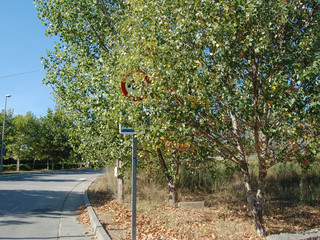
5.500 millones de euros costaría hoy poner en solfa el lamentable estado de la red viaria española, tanto en carreteras estatales como en autonómicas, a tenor de lo observado por la Asociación Española de la Carretera (AEC), que acaba de emitir su balance sobre el estado de nuestras vías y les ha puesto una calificación poco menos que desastrosa.
320.000 señales verticales deterioradas, 50.000 marcas viales que hay que repintar sí o sí, barreras metálicas que están hechas un asco y hasta un 21 % de las farolas, que no alumbran porque están apagadas. Ese es el balance del estudio realizado, que aborda el 90 % de los 165.000 kilómetros de carreteras que tenemos en España.
¿Dónde ha ido el dinero necesario para el mantenimiento de las infraestructuras? Miguel María Muñoz, que fue director general de la DGT entre 1988 y 1996 y hoy preside la AEC, lo tiene clarísimo. En medio del clima de Presupuestos Generales del Estado aderezados con recortes, Muñoz sostiene que los millones que cuesta arreglar este desaguisado equivalen a 96 kilómetros de AVE. Y hay otro dato: cada euro que no se invierte hoy se transforma en 25 euros que habrá que pagar de aquí a cinco años.
Vía | El Mundo
Un saludo para Kiko, y gracias por la pista
Foto | Circula Seguro
En Motorpasión Moto | Las carreteras españolas están al nivel de mantenimiento de los años ochenta
Thu, 05 Apr 2012 16:15:00 GMT
2013 SRT Viper
2013 SRT Viper
El nuevo 2013 SRT Viper (como bien sabéis anteriormente conocido como Dodge, aunque ahora Chrysler prefiere llamarle SRT por Street and Racing Technology) es un deportivo biplaza americano diseñado para no amedrentarse frente a ningún rival, gracias a la friolera de 649 CV. Todo un muscle car del siglo XXI: el retorno de la serpiente. El corazón del SRT Viper es un imponente motor de gasolina V10 de 8.4 litros OHV, colocado en posición delantera, por detrás del eje. Está fabricado en aluminio y ensamblado a mano, tiene 649 CV (640 HP) y 813,5 Nm de par (600 lb-ft), una cifra de par tremenda para un motor atmosférico. Este motor incluye varias mejoras, como el colector de admisión de flujo ultra alto, y además ultraligero fabricado en resinas compuestas, pistones forjados de alta resistencia, válvulas de escape huecas rellenas de sodio (para mejorar la refrigeración), un nuevo volante de inercia de aluminio que reduce las pérdidas y un nuevo catalizador que reduce la contrapresión. Este motor se encuentra asociado a las ruedas traseras a través de una caja de cambios manual Tremec TR6060 de seis velocidades. Tiene una palanca de cambios de tiro más corto y las relaciones de cambio son más próximas entre sí, con una relación final de cambio que se ha reducido de 3,55 a 3,07. La velocidad máxima del STR Viper 2013 se alcanza ahora en sexta a 6.200 rpm. 2013 SRT Viper: más potente y más ligero El motor se ha aligerado unos 11,3 kg, pero el bastidor y la carrocería también han perdido peso, unos 45,3 kg. Gracias a un diseño estructural más rígido, el bastidor del nuevo SRT Viper tiene un 50% más de rigidez torsional. Por ejemplo la “X” de aluminio al magnesio bajo el capó, sobre el motor, une los extremos superiores de la amortiguación delantera con el bastidor y añade rigidez. Se incorpora también una viga de aluminio en la parte frontal para mejorar la resistencia en caso de choque y perder unos kilos frente al acero. El empleo de nuevos materiales más ligeros en la carrocería, así como aceros de mayor resistencia que han permitido también reducir la sección de algunas partes, además de reducir masa, ha ayudado algo a mejorar el reparto de pesos. Por ejemplo el capó y el techo son de fibra de carbono, mientras que las puertas son de aluminio. La amortiguación trasera se ha rediseñado, moviendo la unión por delante del eje, para mejorar el control y la estabilidad. Se incorpora una suspensión Bilstein DampTronic con dos niveles de tarado seleccionables electrónicamente, Street (calle) y Track (pista) (debe de ser muy parecida a la del Nissan GT-R). Esta suspensión es de serie en el modelo GTS. El SRT Viper 2013 monta de fábrica neumáticos Pirelli P Zero con índice de velocidad Z y buen comportamiento en clima frío. Opcionalmente se puede pedir el pack SRT Track con neumáticos Pirelli P Zero Corsa de compuesto más blando, pensados para correr en circuito. El control electrónico de estabilidad multietapa y el control de tracción se han configurado para mejorar la tracción en prácticamente cualquier velocidad, aún así son desconectables a voluntad del conductor desde el propio volante. Afirman desde SRT que el nuevo Viper tiene distancias de frenado más cortas, gracias a los frenos Brembo de cuatro pistones, con pinzas fijas de aluminio y rotores ventilados con un diámetro de 355 mm, en las cuatro ruedas, y a los frenos ABS de cuatro canales. Si el nuevo Viper tiene 49 CV más y se ha trabajado en aligerarlo varias decenas de kilos, con un coeficiente de arrastre de 0,364 (entre un Ferrari F50 y un Ferrari Testarossa), aunque no se han dado los datos oficiales, casi seguro que será más rápido que los 3,5 s de aceleración de 0 a 100 km/h que tenía el anterior Viper. Su velocidad máxima es de 331 km/h (206 mph). Construido a mano con orgullo en Detroit En el grupo Chrysler se enorgullecen de presentar el nuevo SRT Viper como un coche más potente, con más tecnología, mayor calidad de acabados y contruido a mano en la factoría de la Avenida Conner en Detroit. La quinta generación de Viper estará disponible en dos versiones, la normal, más accesible, y la GTS, con mayor equipamiento tecnológico e interior aún más cuidado. Destaca el esmerado trabajo de cuero artesanal acolchado, con el que se tapizan los asientos de competición Sabelt con estructura de Kevlar y se revisten salpicadero, puertas y resto de elementos interiores, con costuras a juego con el color de los asientos. Se incluyen detalles decorativos con aspecto metal, acabados con tres manos de pintura Gun Metal. Asegura también el fabricante que el nuevo SRT Viper 2013 es el más espacioso de todos los Viper comercializados hasta el momento, habiendo aumentado el espacio para las piernas en 9 cm, y con una regulación en altura del asiento del conductor que permite acomodar mejor conductores de diferentes tallas. El cuadro de instrumentos es mixto. Combina dos relojes analógicos con un tercero digital en el centro, que es en verdad una pantalla LCD a color de 7 pulgadas personalizable, que hace de tacómetro. El SRT Viper 2013 dispone también de un nuevo sistema de conectividad multimedia llamado Uconnect Access, con una pantalla táctil a color de 8,4 pulgadas en la consola central. El equipo de música y la radio, el navegador GPS, el teléfono por bluetooth o el climatizador se pueden controlar a través de esta pantalla. Bajo esta se conservan de todos modos botones físicos de acceso a las funciones más habituales, por ejemplo para el volumen o el climatizador, y también hay algunos botones en el volante. Aunque no se ha explicado mucho más, este sistema de conectividad multimedia también dispondrá de una selección de aplicaciones con nuevas funciones (¿habrá que imaginarse que es algo así como un tablet y que se podrán descargar e instalar más aplicaciones?). Por ejemplo de puede visualizar un conjunto de relojes con la temperatura del aceite, presión de aceite, voltaje de la batería, temperatura del refrigerante y temperatura del aire. Por cierto, entre los asientos hay un hueco con tapa y conexiones para un tablet tipo iPad. El equipo de sonido es de Harman Kardon, en la versión GTS es algo más especial, e incluye 18 altavoces, incluyendo cuatro subwoofers). Los faros delanteros son bi-xenón con luces de marcha diurna led. También son led los pilotos posteriores. Las llantas del SRT Viper son de cinco radios, con tres acabados posibles, aluminio pulido, negro, y negro mate. Para el GTS son de seis radios dobles. Disfrutad de todos los detalles de diseño, como los elementos de la carrocería con textura de piel de serpiente, las branquias del capó o la doble salida de escape por delante de las ruedas traseras, entre otros, con las fotos de la galería y el par de vídeos, en el segundo podéis deleitaros con el sonido de sus diez cilindros (y mejor no penséis en cuántos litros de gasolina consume).
Galería de fotos
(Haz click en una imagen para ampliarla)
Vídeo | (1)YouTube, (2)YouTube En Motorpasión | Primer teaser del 2013 Dodge Viper SRT
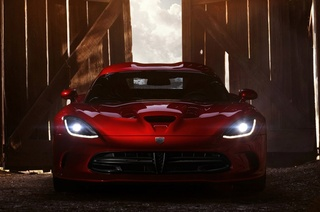
El nuevo 2013 SRT Viper (como bien sabéis anteriormente conocido como Dodge, aunque ahora Chrysler prefiere llamarle SRT por Street and Racing Technology) es un deportivo biplaza americano diseñado para no amedrentarse frente a ningún rival, gracias a la friolera de 649 CV. Todo un muscle car del siglo XXI: el retorno de la serpiente.
El corazón del SRT Viper es un imponente motor de gasolina V10 de 8.4 litros OHV, colocado en posición delantera, por detrás del eje. Está fabricado en aluminio y ensamblado a mano, tiene 649 CV (640 HP) y 813,5 Nm de par (600 lb-ft), una cifra de par tremenda para un motor atmosférico.
Este motor incluye varias mejoras, como el colector de admisión de flujo ultra alto, y además ultraligero fabricado en resinas compuestas, pistones forjados de alta resistencia, válvulas de escape huecas rellenas de sodio (para mejorar la refrigeración), un nuevo volante de inercia de aluminio que reduce las pérdidas y un nuevo catalizador que reduce la contrapresión.
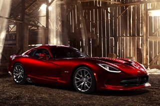
Este motor se encuentra asociado a las ruedas traseras a través de una caja de cambios manual Tremec TR6060 de seis velocidades. Tiene una palanca de cambios de tiro más corto y las relaciones de cambio son más próximas entre sí, con una relación final de cambio que se ha reducido de 3,55 a 3,07. La velocidad máxima del STR Viper 2013 se alcanza ahora en sexta a 6.200 rpm.
2013 SRT Viper: más potente y más ligero
El motor se ha aligerado unos 11,3 kg, pero el bastidor y la carrocería también han perdido peso, unos 45,3 kg. Gracias a un diseño estructural más rígido, el bastidor del nuevo SRT Viper tiene un 50% más de rigidez torsional.
Por ejemplo la “X” de aluminio al magnesio bajo el capó, sobre el motor, une los extremos superiores de la amortiguación delantera con el bastidor y añade rigidez. Se incorpora también una viga de aluminio en la parte frontal para mejorar la resistencia en caso de choque y perder unos kilos frente al acero.
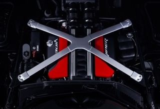
El empleo de nuevos materiales más ligeros en la carrocería, así como aceros de mayor resistencia que han permitido también reducir la sección de algunas partes, además de reducir masa, ha ayudado algo a mejorar el reparto de pesos. Por ejemplo el capó y el techo son de fibra de carbono, mientras que las puertas son de aluminio.
La amortiguación trasera se ha rediseñado, moviendo la unión por delante del eje, para mejorar el control y la estabilidad. Se incorpora una suspensión Bilstein DampTronic con dos niveles de tarado seleccionables electrónicamente, Street (calle) y Track (pista) (debe de ser muy parecida a la del Nissan GT-R). Esta suspensión es de serie en el modelo GTS.
El SRT Viper 2013 monta de fábrica neumáticos Pirelli P Zero con índice de velocidad Z y buen comportamiento en clima frío. Opcionalmente se puede pedir el pack SRT Track con neumáticos Pirelli P Zero Corsa de compuesto más blando, pensados para correr en circuito.
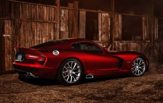
El control electrónico de estabilidad multietapa y el control de tracción se han configurado para mejorar la tracción en prácticamente cualquier velocidad, aún así son desconectables a voluntad del conductor desde el propio volante.
Afirman desde SRT que el nuevo Viper tiene distancias de frenado más cortas, gracias a los frenos Brembo de cuatro pistones, con pinzas fijas de aluminio y rotores ventilados con un diámetro de 355 mm, en las cuatro ruedas, y a los frenos ABS de cuatro canales.
Si el nuevo Viper tiene 49 CV más y se ha trabajado en aligerarlo varias decenas de kilos, con un coeficiente de arrastre de 0,364 (entre un Ferrari F50 y un Ferrari Testarossa), aunque no se han dado los datos oficiales, casi seguro que será más rápido que los 3,5 s de aceleración de 0 a 100 km/h que tenía el anterior Viper. Su velocidad máxima es de 331 km/h (206 mph).
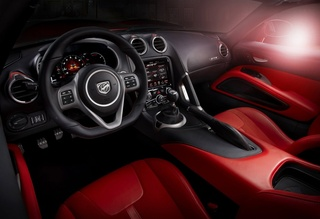
Construido a mano con orgullo en Detroit
En el grupo Chrysler se enorgullecen de presentar el nuevo SRT Viper como un coche más potente, con más tecnología, mayor calidad de acabados y contruido a mano en la factoría de la Avenida Conner en Detroit.
La quinta generación de Viper estará disponible en dos versiones, la normal, más accesible, y la GTS, con mayor equipamiento tecnológico e interior aún más cuidado.
Destaca el esmerado trabajo de cuero artesanal acolchado, con el que se tapizan los asientos de competición Sabelt con estructura de Kevlar y se revisten salpicadero, puertas y resto de elementos interiores, con costuras a juego con el color de los asientos. Se incluyen detalles decorativos con aspecto metal, acabados con tres manos de pintura Gun Metal.
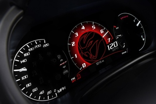
Asegura también el fabricante que el nuevo SRT Viper 2013 es el más espacioso de todos los Viper comercializados hasta el momento, habiendo aumentado el espacio para las piernas en 9 cm, y con una regulación en altura del asiento del conductor que permite acomodar mejor conductores de diferentes tallas.
El cuadro de instrumentos es mixto. Combina dos relojes analógicos con un tercero digital en el centro, que es en verdad una pantalla LCD a color de 7 pulgadas personalizable, que hace de tacómetro.
El SRT Viper 2013 dispone también de un nuevo sistema de conectividad multimedia llamado Uconnect Access, con una pantalla táctil a color de 8,4 pulgadas en la consola central. El equipo de música y la radio, el navegador GPS, el teléfono por bluetooth o el climatizador se pueden controlar a través de esta pantalla.
Bajo esta se conservan de todos modos botones físicos de acceso a las funciones más habituales, por ejemplo para el volumen o el climatizador, y también hay algunos botones en el volante.
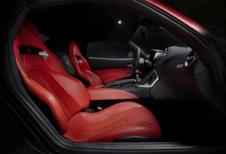
Aunque no se ha explicado mucho más, este sistema de conectividad multimedia también dispondrá de una selección de aplicaciones con nuevas funciones (¿habrá que imaginarse que es algo así como un tablet y que se podrán descargar e instalar más aplicaciones?).
Por ejemplo de puede visualizar un conjunto de relojes con la temperatura del aceite, presión de aceite, voltaje de la batería, temperatura del refrigerante y temperatura del aire. Por cierto, entre los asientos hay un hueco con tapa y conexiones para un tablet tipo iPad.
El equipo de sonido es de Harman Kardon, en la versión GTS es algo más especial, e incluye 18 altavoces, incluyendo cuatro subwoofers).
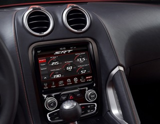
Los faros delanteros son bi-xenón con luces de marcha diurna led. También son led los pilotos posteriores. Las llantas del SRT Viper son de cinco radios, con tres acabados posibles, aluminio pulido, negro, y negro mate. Para el GTS son de seis radios dobles.
Disfrutad de todos los detalles de diseño, como los elementos de la carrocería con textura de piel de serpiente, las branquias del capó o la doble salida de escape por delante de las ruedas traseras, entre otros, con las fotos de la galería y el par de vídeos, en el segundo podéis deleitaros con el sonido de sus diez cilindros (y mejor no penséis en cuántos litros de gasolina consume).
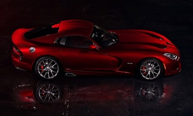
Galería de fotos
(Haz click en una imagen para ampliarla)
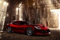
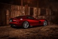
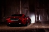
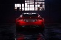
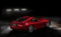
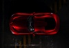
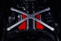
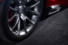
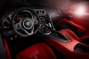
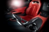
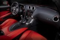
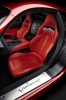
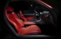
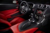
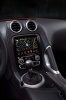
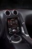
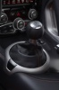
Vídeo | (1)YouTube, (2)YouTube
En Motorpasión | Primer teaser del 2013 Dodge Viper SRT
Mon, 09 Apr 2012 04:00:00 GMT
P'alante, ¿no? ¿O... os quedáis aquí 'paraos'?
P'alante, ¿no? ¿O... os quedáis aquí 'paraos'?
Después de todo lo que dije el otro día sobre los desplazamientos por vacaciones, hoy te confieso que al final yo también sucumbí a los encantos de salir a la carretera en plena operación salida de Semana Santa. De vez en cuando me pasa: estoy todo el día hablando de estos temas y luego me encuentro con que salgo con el coche sin recordar qué día es. Y me encuentro en medio del follón, claro. Sucedió el jueves, que me fui a hacer unas gestiones… bueno, en realidad me fui de compras con la familia, pero lo otro queda como más serio, aunque las compras seguramente muevan más dinero que las gestiones. El caso es que me encontré, ya volviendo hacia casa, con un lío de proporciones considerables en medio de la autopista AP-7. Enseguida me di cuenta de lo que sucedía. Jueves por la tarde, festivo a partir del viernes en Cataluña, uno más uno siguen sumando dos… Pues vale, caravana XL. Con lo que nos llegamos a reír el lunes pasado con lo del caracol… y voy yo y me lo como. El lío; no el caracol, pobre. Sin embargo, no fue ese despiste lo que me indujo a pensar: “de lo perdido saca lo que puedas, que aquí tienes para hablar de comportamientos al volante”, sino la acción de algún que otro conductor de esos que luego me comentas con toda la naturalidad del mundo que tú ves a menudo por ahí, pero que a mí me siguen sorprendiendo porque no me da la gana considerar sus actos como algo normal. Ya te conté lo de lo normal y lo habitual, ¿verdad? Caravana en el carril izquierdo Para que te pongas en situación, tenemos: una caravana de coches completamente detenidos en el tercer carril de la autopista, que se bifurca hacia la izquierda, un trillón de coches y camiones que pasan por la derecha a toda castaña, un pon primera y embraga, desembraga y frena y vuelve a poner punto muerto, ya tú sabes. En estas que se genera un pelín de distancia con el coche de delante. Y en estas que viene un Clio a toda leche procedente del espacio sideral por lo menos, y se pilla el hueco como hecho a medida. Bueno, no me viene de aquí. Hace años que entendí que la carretera no es mía y el carril, tampoco. Y además, seguro que el muchacho no ha podido cambiarse a tiempo al carril izquierdo, entre la velocidad que llevaba y el hecho de que los cuatrocientos mil coches que hay allí en medio no se deben de ver desde su galaxia de origen. De donde fuera que llegó, ahí se quedó. Ah, pero ese no es el tipo que origina el problema. Bueno, un poco de efecto acordeón habría causado si hubiésemos llevado velocidad, pero como estábamos compitiendo con los caracoles, pues no había caso. Este del Clio era un falso culpable, que a mí esta figura siempre me ha gustado en las películas. No. Lo bonito del caso vino en forma de camión con remolque y con coches montados sobre su chepa. Vamos, un transportista y un profesional del volante con todas las señas y todos los rasgos… menos los propios de la conducción, a tenor de lo visto. Por sus hechos los conoceréis, ¿no era eso? Pues eso. “Es que yo quería ir allí” ¿Pues no coge el buen hombre y se planta con el camión en mitad del carril central de la autopista? Claro, como era jueves él debió de sentirse identificado y de alguna forma impelido a actuar en solidaridad con él. ¿Cómo? Quedándose en medio. Por cierto, ahí va un paréntesis por si no sabes de qué va el título de hoy. Hace referencia a este vídeo, todo un meme del programa ‘APM?’, de TV3. Ni te cuento la que se lió en un momento en aquel punto de la autopista. Ni te explico los frenazos, las esquivas y el concierto de señales acústicas que presenciamos los allí presentes. Pero no sólo coches: camiones, tráilers… todo aquello que llevase ruedas y que pasara por algún punto a 50 kilómetros a la redonda parecía haber sido absorbido por aquel agujero negro del sentido común. Esto es algo que nunca acertaré a entender de algunos / muchos conductores. La idea del “ay, que me paso la salida”, cuando se lleva al punto del “es que tengo que salir por aquí”, como si de no abandonar la vía el coche (o el camión en este caso, manda ovoproducto) explotase como en una película de Chuck Norris por lo menos. Con la de rotondas que hay para dar media vuelta un poco más adelante, por favor. A eso le llamo yo tener mentalidad de peatón: tengo que ir allí, y tiro por aquí mismo. Ojo, y de peatón que no sabe lo que es un paso para peatones, aclaro. - Oiga, que no. Que no explota. Nada, que vuelvo a lo del camión y dejo esto aquí escrito por si lo lee el conductor, porque está claro que no me escuchó cuando se lo dije allí en medio, entre los frenazos, los pitidos y otros gritos procedentes de otros conductores, que decían no sé qué de su madre. Me lo tomo a pitorreo porque ya me dirás qué le voy a hacer a una situación como esta. Pero hubo más de varios sustos en un momento. Y otros no han corrido la misma suerte: fueron más allá del susto. Sucedió hace unos años, pero creo que siempre recordaré que hubo un matrimonio que, por pasarse una salida, tuvieron la loca idea de hacer un cambio de sentido aprovechando un hueco en la mediana de una de las rondas de Barcelona. Creo que fueron cuatro los coches que se los llevaron por delante. Nunca lo entenderé. Con lo fácil que resulta seguir adelante cuando te falla lo de la disciplina de carril… En Motorpasión | Millones de desplazamientos no pueden estar equivocados
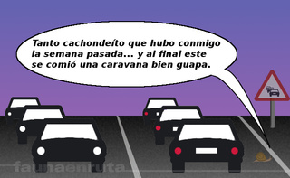
Después de todo lo que dije el otro día sobre los desplazamientos por vacaciones, hoy te confieso que al final yo también sucumbí a los encantos de salir a la carretera en plena operación salida de Semana Santa. De vez en cuando me pasa: estoy todo el día hablando de estos temas y luego me encuentro con que salgo con el coche sin recordar qué día es.
Y me encuentro en medio del follón, claro. Sucedió el jueves, que me fui a hacer unas gestiones… bueno, en realidad me fui de compras con la familia, pero lo otro queda como más serio, aunque las compras seguramente muevan más dinero que las gestiones. El caso es que me encontré, ya volviendo hacia casa, con un lío de proporciones considerables en medio de la autopista AP-7.
Enseguida me di cuenta de lo que sucedía. Jueves por la tarde, festivo a partir del viernes en Cataluña, uno más uno siguen sumando dos… Pues vale, caravana XL. Con lo que nos llegamos a reír el lunes pasado con lo del caracol… y voy yo y me lo como. El lío; no el caracol, pobre.
Sin embargo, no fue ese despiste lo que me indujo a pensar: “de lo perdido saca lo que puedas, que aquí tienes para hablar de comportamientos al volante”, sino la acción de algún que otro conductor de esos que luego me comentas con toda la naturalidad del mundo que tú ves a menudo por ahí, pero que a mí me siguen sorprendiendo porque no me da la gana considerar sus actos como algo normal. Ya te conté lo de lo normal y lo habitual, ¿verdad?
Caravana en el carril izquierdo
Para que te pongas en situación, tenemos: una caravana de coches completamente detenidos en el tercer carril de la autopista, que se bifurca hacia la izquierda, un trillón de coches y camiones que pasan por la derecha a toda castaña, un pon primera y embraga, desembraga y frena y vuelve a poner punto muerto, ya tú sabes.
En estas que se genera un pelín de distancia con el coche de delante. Y en estas que viene un Clio a toda leche procedente del espacio sideral por lo menos, y se pilla el hueco como hecho a medida. Bueno, no me viene de aquí. Hace años que entendí que la carretera no es mía y el carril, tampoco.
Y además, seguro que el muchacho no ha podido cambiarse a tiempo al carril izquierdo, entre la velocidad que llevaba y el hecho de que los cuatrocientos mil coches que hay allí en medio no se deben de ver desde su galaxia de origen. De donde fuera que llegó, ahí se quedó.
Ah, pero ese no es el tipo que origina el problema. Bueno, un poco de efecto acordeón habría causado si hubiésemos llevado velocidad, pero como estábamos compitiendo con los caracoles, pues no había caso. Este del Clio era un falso culpable, que a mí esta figura siempre me ha gustado en las películas.
No. Lo bonito del caso vino en forma de camión con remolque y con coches montados sobre su chepa. Vamos, un transportista y un profesional del volante con todas las señas y todos los rasgos… menos los propios de la conducción, a tenor de lo visto. Por sus hechos los conoceréis, ¿no era eso? Pues eso.
“Es que yo quería ir allí”
¿Pues no coge el buen hombre y se planta con el camión en mitad del carril central de la autopista? Claro, como era jueves él debió de sentirse identificado y de alguna forma impelido a actuar en solidaridad con él. ¿Cómo? Quedándose en medio. Por cierto, ahí va un paréntesis por si no sabes de qué va el título de hoy. Hace referencia a este vídeo, todo un meme del programa ‘APM?’, de TV3.
Ni te cuento la que se lió en un momento en aquel punto de la autopista. Ni te explico los frenazos, las esquivas y el concierto de señales acústicas que presenciamos los allí presentes. Pero no sólo coches: camiones, tráilers… todo aquello que llevase ruedas y que pasara por algún punto a 50 kilómetros a la redonda parecía haber sido absorbido por aquel agujero negro del sentido común.
Esto es algo que nunca acertaré a entender de algunos / muchos conductores. La idea del “ay, que me paso la salida”, cuando se lleva al punto del “es que tengo que salir por aquí”, como si de no abandonar la vía el coche (o el camión en este caso, manda ovoproducto) explotase como en una película de Chuck Norris por lo menos. Con la de rotondas que hay para dar media vuelta un poco más adelante, por favor. A eso le llamo yo tener mentalidad de peatón: tengo que ir allí, y tiro por aquí mismo. Ojo, y de peatón que no sabe lo que es un paso para peatones, aclaro.
- Oiga, que no. Que no explota.
Nada, que vuelvo a lo del camión y dejo esto aquí escrito por si lo lee el conductor, porque está claro que no me escuchó cuando se lo dije allí en medio, entre los frenazos, los pitidos y otros gritos procedentes de otros conductores, que decían no sé qué de su madre. Me lo tomo a pitorreo porque ya me dirás qué le voy a hacer a una situación como esta. Pero hubo más de varios sustos en un momento.
Y otros no han corrido la misma suerte: fueron más allá del susto. Sucedió hace unos años, pero creo que siempre recordaré que hubo un matrimonio que, por pasarse una salida, tuvieron la loca idea de hacer un cambio de sentido aprovechando un hueco en la mediana de una de las rondas de Barcelona. Creo que fueron cuatro los coches que se los llevaron por delante.
Nunca lo entenderé. Con lo fácil que resulta seguir adelante cuando te falla lo de la disciplina de carril…
En Motorpasión | Millones de desplazamientos no pueden estar equivocados
Sun, 08 Apr 2012 15:00:00 GMT
Dolorpasión™: Un Bentley Continental Supersports tiene problemas con Charley
Dolorpasión™: Un Bentley Continental Supersports tiene problemas con Charley
Cuando hablamos de superdeportivos, nos repetimos como el ajo diciendo que a veces Dios da pan a quien no tiene dientes. Aquí tenemos un ejemplo más, un Bentley Continental Supersports —620 jacos V12 W12 Biturbo— ha tenido digamos algunos problemillas de coordinación con su conductor, y se ha dado una buena torta en plena ciudad de Ngo Quyen, provincia de Hai Phong, en Vietnam. Aconteció en la madrugada del viernes, hora local. Por lo visto el conductor y su acompañante iban farruquitos y pasó lo que tenía que pasar, que perdieron el control del coche, y suerte que no hubo heridos. Lo que sí hay es cuantiosos daños materiales en el coche, que seguro que al dueño le van a doler bastante. Se salieron de la carretera, golpearon un árbol y un comercio cerrado. Cómo habrá que ir conduciendo para perder un coche con tracción total, neumáticos de altísimo rendimiento y control de estabilidad. Las imágenes hablan por si solas, es Dolorpasión™ en estado puro. Cuentan en GT Spirit que es el tercer Bentley que se estrella en este país asiático, y en su provincia solo hay dos. Los daños se aprecian con facilidad en ambos laterales, morro, neumáticos, parte trasera… Cuanto más lo veo más me duele, ver esto sí que es un acto de penitencia. Sigo dándole vueltas al coco para imaginarme la secuencia del porrazo. Apuesto a arbolazo por la derecha, comerciazo por la izquierda… y el resto es un misterio, oiga. A lo mejor un día Charley nos lo puede contar, pero que lo haga en un idioma que entendamos. Es domingo santo, pero Dolorpasión™ puede ocurrir cualquier domingo. Hay más imágenes en la fuente, por supuesto: Fuente | GT Spirit En Motorpasión | Se vende Bentley Continental GT por 59.000 euros (con algunos roces en la chapa), Dolorpasión™: hacer esto a un Bentley es inmoral, Bentley Continental GT edición pies descalzos
Cuando hablamos de superdeportivos, nos repetimos como el ajo diciendo que a veces Dios da pan a quien no tiene dientes. Aquí tenemos un ejemplo más, un Bentley Continental Supersports —620 jacos V12 W12 Biturbo— ha tenido digamos algunos problemillas de coordinación con su conductor, y se ha dado una buena torta en plena ciudad de Ngo Quyen, provincia de Hai Phong, en Vietnam.
Aconteció en la madrugada del viernes, hora local. Por lo visto el conductor y su acompañante iban farruquitos y pasó lo que tenía que pasar, que perdieron el control del coche, y suerte que no hubo heridos. Lo que sí hay es cuantiosos daños materiales en el coche, que seguro que al dueño le van a doler bastante.
Se salieron de la carretera, golpearon un árbol y un comercio cerrado. Cómo habrá que ir conduciendo para perder un coche con tracción total, neumáticos de altísimo rendimiento y control de estabilidad. Las imágenes hablan por si solas, es Dolorpasión™ en estado puro.
Cuentan en GT Spirit que es el tercer Bentley que se estrella en este país asiático, y en su provincia solo hay dos. Los daños se aprecian con facilidad en ambos laterales, morro, neumáticos, parte trasera… Cuanto más lo veo más me duele, ver esto sí que es un acto de penitencia.
Sigo dándole vueltas al coco para imaginarme la secuencia del porrazo. Apuesto a arbolazo por la derecha, comerciazo por la izquierda… y el resto es un misterio, oiga. A lo mejor un día Charley nos lo puede contar, pero que lo haga en un idioma que entendamos.
Es domingo santo, pero Dolorpasión™ puede ocurrir cualquier domingo. Hay más imágenes en la fuente, por supuesto:
Fuente | GT Spirit
En Motorpasión | Se vende Bentley Continental GT por 59.000 euros (con algunos roces en la chapa), Dolorpasión™: hacer esto a un Bentley es inmoral, Bentley Continental GT edición pies descalzos
Sun, 08 Apr 2012 10:14:14 GMT
Seat 127, cuarenta años del primer amor, el que nunca se olvida
Seat 127, cuarenta años del primer amor, el que nunca se olvida
En abril de 1972, se iniciaba la comercialización del Seat 127, un modelo construido por la firma española bajo licencia Fiat, que tuvo un gran éxito. Este modelo, sucesor del Seat 850, se fabricó durante diez años. Con más de 1.345.000 unidades vendidas, fue sustituido por el Fura cuando Seat y Fiat concluyeron su acuerdo. Con la imagen que estáis viendo descubrí el Seat 127 hace 40 años. Sí, con la portada de un disco de promoción. Nunca había tenido noticias del coche ni de Osibisa, la banda que firmaba el vinilo. Pasé la tarde absorto escuchando Beautiful Seven, Y Sharp y Survival. La noche soñando cómo conducía aquella maravilla por intrincados caminos en África, mientras me perseguía el elefante volador. Al día siguiente pude ver el Seat 127 en una exposición. Fue amor a primera vista, el primero, el que nunca se olvida. Este no es un artículo a fondo sobre el Seat 127, sólo una colección de recuerdos. Seat 127, nacido en un año mágico Los coches suelen ser un buen referente del momento social, y el Seat 127 se empezó a vender en un año mágico. En 1972 se consagraba campeón del mundo de Formula 1 Emerson Fittipaldi y nacieron deportistas de la talla de Rubens Barricello, Luis Figo o Zinedine Zidane. En Vitoria 3.500 trabajadores en huelga provocaban el cierre de la fábrica de Michelín, Paquito Fernández Ochoa obtenía la medalla de oro en eslalon, en los Juegos Olímpicos de invierno en Sapporo y el Apolo XVI visitaba la Luna por última vez. El Seat 127 llegó a España en un momento en el que la gente quería algo más que un Seat 600 y la clase media empezaba a tener poder adquisitivo. El 127 estaba concebido como vehículo de gama media-baja, aunque tuvo su nicho como segundo coche de las familias más acomodadas. Una campaña de publicidad diferente Resulta curioso ver la publicidad con la que se promocionó el Seat 127. Además de la originalidad de vincular el lanzamiento con un tipo de música prácticamente desconocida en España, los eslóganes que aparecían en los anuncios no tienen desperdicio. “Marcando caminos” era uno de ellos. El Seat 127 es un coche que está marcando el camino a otros coches. Directo, depurado, funcional. A partir del Seat 127 se define un nuevo tipo de coche. Fábrica de Seat en Barcelona La línea del Seat 127 era “rompedora” para la época y uno de sus argumentos de venta, junto con su gran visibilidad. La aceleración fue otro de sus puntos fuertes: de 0 a 100 km/h en 20 segundos. La velocidad máxima de 140 km/h y su “reducido” consumo (7 l/100 km) formaban parte de una oferta que consiguió vender 50.000 unidades en los primeros seis meses de existencia. La tracción delantera, primera incorporada por Seat fruto de su unión con Fiat, la gran habitabilidad interior (80% del espacio útil), el doble circuito de frenos independiente y la barra de dirección articulada eran otros de los “anzuelos” que se esgrimían en favor del Seat 127. La mecánica del Seat 127 El Seat 127 fue equipado con tres motores distintos a lo largo de su historia. El primero, de 903 cc y 45 CV de potencia, era el mismo que equipó al Seat 850 sport coupe y Especial, aunque ligeramente civilizado, con vistas a reducir consumo y dotarle de más elasticidad. El segundo motor, con idéntica cilindrada, fue adaptado para consumir gasolina de 90 octanos. El tercero, empleado en el Seat 127 especial, fue diseñado por Seat, tenía 1010 cc y entregaba una potencia de 52 CV. El buen escalonamiento de la caja de cambios y el peso (710 kg), permitían unas aceleraciones brillantes para la época. Con la tercera velocidad conseguía alcanzar 110 km/h, facilitando los adelantamientos. En cuarta marcha se mantenían bien los 120 km/h y pisando mucho el acelerador se conseguía llegar a los 140 km/h. Eran velocidades más que suficientes para la calidad de las carreteras de la época. El Seat 127 es un coche que siempre ha frenado muy bien. Los discos delanteros y las zapatas traseras conseguían un buen equilibrio cuando había que pisar el freno a fondo. La suspensión la recuerdo como excelente, más dura que blanda (hablando de lo que había en la época), y transmitía seguridad. A pesar del motor y tracción delantera no era un coche particularmente subvirador. Volviendo la vista atrás Salvando las distancias con la tecnología actual, que son muchas, el Seat 127 fue un coche que nos permitió a muchos jóvenes de entonces experimentar sensaciones propias de un coche deportivo dentro de unos límites de precio muy razonables. Mi mejor experiencia con este coche ha sido tener la oportunidad de conducir uno de los escasos Fiat 127 preparados por Abarth. Montaba una caja de cambios de 5 velocidades con una relación muy cerrada. Cogía vueltas como un molinillo, parecía una moto. Recuerdo el volante de radio reducido, bastante duro para aparcar, y la exagerada caída negativa de las ruedas. Cuando forzabas a tope en curva con firme deslizante, se iba de las cuatro ruedas, pero con mucha nobleza. Un modelo fantástico del que guardo muy gratos momentos. Vídeo: The real Fiat 127 Abarth Quiero agradecer especialmente al blog 18 RODAS, la cortesía de permitir el empleo de la imagen de portada, y a su autor la gentileza espontánea de escanear la imagen con buena resolución para este artículo. Imagen | 18 RODAS Vídeo | YouTube En Motorpasión | Víctimas del Plan 2000E: SEAT 127
En abril de 1972, se iniciaba la comercialización del Seat 127, un modelo construido por la firma española bajo licencia Fiat, que tuvo un gran éxito. Este modelo, sucesor del Seat 850, se fabricó durante diez años. Con más de 1.345.000 unidades vendidas, fue sustituido por el Fura cuando Seat y Fiat concluyeron su acuerdo.
Con la imagen que estáis viendo descubrí el Seat 127 hace 40 años. Sí, con la portada de un disco de promoción. Nunca había tenido noticias del coche ni de Osibisa, la banda que firmaba el vinilo. Pasé la tarde absorto escuchando Beautiful Seven, Y Sharp y Survival.
La noche soñando cómo conducía aquella maravilla por intrincados caminos en África, mientras me perseguía el elefante volador. Al día siguiente pude ver el Seat 127 en una exposición. Fue amor a primera vista, el primero, el que nunca se olvida. Este no es un artículo a fondo sobre el Seat 127, sólo una colección de recuerdos.
Seat 127, nacido en un año mágico
Los coches suelen ser un buen referente del momento social, y el Seat 127 se empezó a vender en un año mágico. En 1972 se consagraba campeón del mundo de Formula 1 Emerson Fittipaldi y nacieron deportistas de la talla de Rubens Barricello, Luis Figo o Zinedine Zidane.
En Vitoria 3.500 trabajadores en huelga provocaban el cierre de la fábrica de Michelín, Paquito Fernández Ochoa obtenía la medalla de oro en eslalon, en los Juegos Olímpicos de invierno en Sapporo y el Apolo XVI visitaba la Luna por última vez.
El Seat 127 llegó a España en un momento en el que la gente quería algo más que un Seat 600 y la clase media empezaba a tener poder adquisitivo. El 127 estaba concebido como vehículo de gama media-baja, aunque tuvo su nicho como segundo coche de las familias más acomodadas.
Una campaña de publicidad diferente
Resulta curioso ver la publicidad con la que se promocionó el Seat 127. Además de la originalidad de vincular el lanzamiento con un tipo de música prácticamente desconocida en España, los eslóganes que aparecían en los anuncios no tienen desperdicio. “Marcando caminos” era uno de ellos.
El Seat 127 es un coche que está marcando el camino a otros coches. Directo, depurado, funcional. A partir del Seat 127 se define un nuevo tipo de coche.
 Fábrica de Seat en Barcelona
Fábrica de Seat en Barcelona La línea del Seat 127 era “rompedora” para la época y uno de sus argumentos de venta, junto con su gran visibilidad. La aceleración fue otro de sus puntos fuertes: de 0 a 100 km/h en 20 segundos. La velocidad máxima de 140 km/h y su “reducido” consumo (7 l/100 km) formaban parte de una oferta que consiguió vender 50.000 unidades en los primeros seis meses de existencia.
La tracción delantera, primera incorporada por Seat fruto de su unión con Fiat, la gran habitabilidad interior (80% del espacio útil), el doble circuito de frenos independiente y la barra de dirección articulada eran otros de los “anzuelos” que se esgrimían en favor del Seat 127.
La mecánica del Seat 127
El Seat 127 fue equipado con tres motores distintos a lo largo de su historia. El primero, de 903 cc y 45 CV de potencia, era el mismo que equipó al Seat 850 sport coupe y Especial, aunque ligeramente civilizado, con vistas a reducir consumo y dotarle de más elasticidad.
El segundo motor, con idéntica cilindrada, fue adaptado para consumir gasolina de 90 octanos. El tercero, empleado en el Seat 127 especial, fue diseñado por Seat, tenía 1010 cc y entregaba una potencia de 52 CV. El buen escalonamiento de la caja de cambios y el peso (710 kg), permitían unas aceleraciones brillantes para la época.
Con la tercera velocidad conseguía alcanzar 110 km/h, facilitando los adelantamientos. En cuarta marcha se mantenían bien los 120 km/h y pisando mucho el acelerador se conseguía llegar a los 140 km/h. Eran velocidades más que suficientes para la calidad de las carreteras de la época.
El Seat 127 es un coche que siempre ha frenado muy bien. Los discos delanteros y las zapatas traseras conseguían un buen equilibrio cuando había que pisar el freno a fondo. La suspensión la recuerdo como excelente, más dura que blanda (hablando de lo que había en la época), y transmitía seguridad. A pesar del motor y tracción delantera no era un coche particularmente subvirador.
Volviendo la vista atrás
Salvando las distancias con la tecnología actual, que son muchas, el Seat 127 fue un coche que nos permitió a muchos jóvenes de entonces experimentar sensaciones propias de un coche deportivo dentro de unos límites de precio muy razonables.
Mi mejor experiencia con este coche ha sido tener la oportunidad de conducir uno de los escasos Fiat 127 preparados por Abarth. Montaba una caja de cambios de 5 velocidades con una relación muy cerrada. Cogía vueltas como un molinillo, parecía una moto.
Recuerdo el volante de radio reducido, bastante duro para aparcar, y la exagerada caída negativa de las ruedas. Cuando forzabas a tope en curva con firme deslizante, se iba de las cuatro ruedas, pero con mucha nobleza. Un modelo fantástico del que guardo muy gratos momentos.
Vídeo: The real Fiat 127 Abarth
Quiero agradecer especialmente al blog 18 RODAS, la cortesía de permitir el empleo de la imagen de portada, y a su autor la gentileza espontánea de escanear la imagen con buena resolución para este artículo.
Imagen | 18 RODAS
Vídeo | YouTube
En Motorpasión | Víctimas del Plan 2000E: SEAT 127
Sun, 08 Apr 2012 04:00:00 GMT
Vendido por ebay un Mercedes-Benz 300SL de madera
Vendido por ebay un Mercedes-Benz 300SL de madera
No sé si habréis tenido algún coche de madera, pero yo conservo desde hace años un camión, con su volquete, su dirección e incluso sus luces. Para mí siempre ha sido una maravilla, una obra de arte, aunque quizá debería reconsiderar esto último después de ver las fotografías que acompañan el artículo. Lo que veis es una reproducción en madera a escala real de un Mercedes-Benz 300 SL de 1955, un clásico alas de gaviota, aunque fabricado al completo con madera y con elementos totalmente funcionales como la dirección o incluso las puertas de tipo alas de gaviota. Este 300 SL a escala real podría ser tuyo por unos 5.000 euros, si no fuese porque ya ha sido vendido a un comprador a través de ebay. No obstante, la compañía tiene a la venta un Cadillac de 1903 y seguro que por una suma suficientemente generosa de dinero nos construirán cualquier cosa que pidamos. Vía | Motor Authority En Motorpasión | Un Lamborghini Aventador de 3,5 millones de euros
No sé si habréis tenido algún coche de madera, pero yo conservo desde hace años un camión, con su volquete, su dirección e incluso sus luces. Para mí siempre ha sido una maravilla, una obra de arte, aunque quizá debería reconsiderar esto último después de ver las fotografías que acompañan el artículo.
Lo que veis es una reproducción en madera a escala real de un Mercedes-Benz 300 SL de 1955, un clásico alas de gaviota, aunque fabricado al completo con madera y con elementos totalmente funcionales como la dirección o incluso las puertas de tipo alas de gaviota.
Este 300 SL a escala real podría ser tuyo por unos 5.000 euros, si no fuese porque ya ha sido vendido a un comprador a través de ebay. No obstante, la compañía tiene a la venta un Cadillac de 1903 y seguro que por una suma suficientemente generosa de dinero nos construirán cualquier cosa que pidamos.
Vía | Motor Authority
En Motorpasión | Un Lamborghini Aventador de 3,5 millones de euros
Sat, 07 Apr 2012 19:40:00 GMT
Motorpasión a dos ruedas: todos con Joan Lascorz
Motorpasión a dos ruedas: todos con Joan Lascorz
Siento comenzar la semana 40 de Motorpasión a dos ruedas con algo así, pero la escasa atención que ha tenido en los medios debido a las “chuletas” de Dani Pedrosa exige a mi sentido común estas, las primeras líneas. Y es que Joan Lascorz, el piloto del mundial de Superbikes, se encuentra ingresado en el Vall d’Hebron tras sufrir un grave accidente durante los test de Imola el pasado lunes. Esta siendo una semana dura para la afición, pendientes de su avance, de si despertaba o no, y de momento todo lo que sabemos – sin rumores por medio – es que fue operado de una elongación de la sexta vértebra. Según el último comunicado de hace unas horas para conocer el alcance de las lesiones neurológicas habrá que esperar a que la hinchazón de la zona desaparezca. Jumbo tiene 27 años y acababa de aterrizar en la categoría. Corría bajo los colores del equipo oficial Kawasaki, equipo con el que había formado escuadra desde hace años en categorías inferiores y que había avanzado como un grupo de profesionales hasta Superbikes. Por fin tenía su oportunidad, la situación ponía en sus manos la victoria hasta este desgraciado accidente. Para Joan, familia, equipo y amigos, nuestro mayor abrazo, ánimo, fuerzas y nuestros artículos en Motorpasión Moto contando sus luchas personales y profesionales. Pero accidentes de este tipo ocurren a diario, a veces por temeridad, a veces por imprudencias y en otras ocasiones por un pésimo estado de las infraestructuras. En este sentido cabe subrayar algo, el nivel de mantenimiento de nuestras carreteras está a nivel de los años 80. Triste pero cierto, según la Asociación Española de la Carretera. Sobre ese asfalto de la época de las hombreras se comenzó a ver un misil con ruedas: la Kawasaki GPZ900R. Con 115cv a 9.500rpm Kawasaki se sacó de la manga un as que había estado llevando a cabo durante años. Su historia, su relación con el cine, con los sueños de adolescente y la competición nos la ha contado esta semana Luis Font. Su lectura, deber y placer para el aficionado del motociclismo. Aun más extraña y complicada de ver por nuestras carreteras es la máquina que los chicos de MCN – el Motociclismo británico, para entendernos – han probado en Suiza. Nada y nada menos que la Foggy Petronas FP1, una deportiva de la que sólo se llegaron a fabricar 150 unidades para pasar la homologación de la FIM que permitiera su participación en Superbikes. Este proyecto de Sauber Petronas con Carl Fogarty ha llegado ahora a las manos de Michael Guy en su versión de carretera, nunca antes probada. Atentos a la sonrisa constante del británico y al espectacular sonido de la tricilíndrica de 899cc y 127cv. Y, aunque no llega a ser tan exclusiva como la deportiva malaya, la Moto Morini Rebello 1200 Giubileo despertará el interés de todos allá por donde pasa pues de ella sólo se fabricarán 600 unidades a un precio de 13.900 euros. Personalmente, lo que más me ha llamado la atención de la Moto Morini es su colín retráctil, que con un sistema eléctrico permite transformar la italiana en monoplaza o biplaza según convenga. Por cierto, ha comenzado MotoGP 2012, ¿no te lo irás a perder? Que por estrenar, estrenamos hasta televisión… Más información | Motorpasión Moto En Motorpasión | Motorpasión a dos ruedas
Siento comenzar la semana 40 de Motorpasión a dos ruedas con algo así, pero la escasa atención que ha tenido en los medios debido a las “chuletas” de Dani Pedrosa exige a mi sentido común estas, las primeras líneas. Y es que Joan Lascorz, el piloto del mundial de Superbikes, se encuentra ingresado en el Vall d’Hebron tras sufrir un grave accidente durante los test de Imola el pasado lunes. Esta siendo una semana dura para la afición, pendientes de su avance, de si despertaba o no, y de momento todo lo que sabemos – sin rumores por medio – es que fue operado de una elongación de la sexta vértebra. Según el último comunicado de hace unas horas para conocer el alcance de las lesiones neurológicas habrá que esperar a que la hinchazón de la zona desaparezca.
Jumbo tiene 27 años y acababa de aterrizar en la categoría. Corría bajo los colores del equipo oficial Kawasaki, equipo con el que había formado escuadra desde hace años en categorías inferiores y que había avanzado como un grupo de profesionales hasta Superbikes. Por fin tenía su oportunidad, la situación ponía en sus manos la victoria hasta este desgraciado accidente. Para Joan, familia, equipo y amigos, nuestro mayor abrazo, ánimo, fuerzas y nuestros artículos en Motorpasión Moto contando sus luchas personales y profesionales.
Pero accidentes de este tipo ocurren a diario, a veces por temeridad, a veces por imprudencias y en otras ocasiones por un pésimo estado de las infraestructuras. En este sentido cabe subrayar algo, el nivel de mantenimiento de nuestras carreteras está a nivel de los años 80. Triste pero cierto, según la Asociación Española de la Carretera.
Sobre ese asfalto de la época de las hombreras se comenzó a ver un misil con ruedas: la Kawasaki GPZ900R. Con 115cv a 9.500rpm Kawasaki se sacó de la manga un as que había estado llevando a cabo durante años. Su historia, su relación con el cine, con los sueños de adolescente y la competición nos la ha contado esta semana Luis Font. Su lectura, deber y placer para el aficionado del motociclismo.
Aun más extraña y complicada de ver por nuestras carreteras es la máquina que los chicos de MCN – el Motociclismo británico, para entendernos – han probado en Suiza. Nada y nada menos que la Foggy Petronas FP1, una deportiva de la que sólo se llegaron a fabricar 150 unidades para pasar la homologación de la FIM que permitiera su participación en Superbikes. Este proyecto de Sauber Petronas con Carl Fogarty ha llegado ahora a las manos de Michael Guy en su versión de carretera, nunca antes probada. Atentos a la sonrisa constante del británico y al espectacular sonido de la tricilíndrica de 899cc y 127cv.
Y, aunque no llega a ser tan exclusiva como la deportiva malaya, la Moto Morini Rebello 1200 Giubileo despertará el interés de todos allá por donde pasa pues de ella sólo se fabricarán 600 unidades a un precio de 13.900 euros. Personalmente, lo que más me ha llamado la atención de la Moto Morini es su colín retráctil, que con un sistema eléctrico permite transformar la italiana en monoplaza o biplaza según convenga.
Por cierto, ha comenzado MotoGP 2012, ¿no te lo irás a perder? Que por estrenar, estrenamos hasta televisión…
Más información | Motorpasión Moto
En Motorpasión | Motorpasión a dos ruedas
Sat, 07 Apr 2012 12:00:00 GMT
Regreso al futuro del DeLorean: en 2013 y por 95.000 dólares
Regreso al futuro del DeLorean: en 2013 y por 95.000 dólares
En el Salón del Automóvil de Nueva York Stephen Wynne, actual propietario de The DeLorean Motor Company, ha confirmado el regreso del mítico DMC-12 DeLorean para el año 2013, 32 añitos después de su nacimiento. Esta vez no funcionará ni con un condensador de fluzo ni con basura ni con… Irá a pilas, con una batería de iones de litio, como no podía ser menos en un coche que nos llega del futuro. De hecho, con motivo de la recreación del coche, los responsables de DMC se han permitido hacerle un guiño a los fans de ‘Regreso al futuro’ adoptando como lema la adaptación de una frase de película que es para el recuerdo: ¿Gasolina? ¡Adonde vamos no necesitamos gasolina! Si el DeLorean de toda la vida se movía gracias a un motor V6 de 2.849 cc que entregaba 137 CV (aunque en la película lo sometieron a doblaje para que aparentara más), el DMC-12 DeLorean Electric montará un motor Epic que rendirá el equivalente a 259 CV, lo que le permitirá alcanzar una velocidad máxima de 200 km/h con una aceleración de 0 a 100 km/h en menos de cinco segundos. Su batería de 32 kWh, situada en el centro del vehículo, le dará una autonomía de 160 km. Sí, algo escaso, pero es que su diseño ochentero tampoco permite muchas alegrías aerodinámicas. Eso sí, los materiales han cambiado, y ahora la fibra de vidrio le dará al coche ese toque mágico que necesitaba para volar. Y hablando de volar, sus distintivas puertas de ala de gaviota las conservará, claro. El interior se ha modernizado por completo, ahora incluye accesorios para smartphones y otros acabados de nuestra era. Nada que ver con los botonacos que mostraba la versión preparada para la película protagonizada por Michael J. Fox. El precio de lanzamiento del DMC-12 DeLorean Electric será de 95.000 dólares, 72.500 euros al cambio, dos veces y media lo que costaba su predecesor al salir a la venta. ¿Quién se pide uno?
Galería de fotos
(Haz click en una imagen para ampliarla)
Vía | Autoblog Más información | DMC EV En Motorpasión | La balada de John Z. DeLorean – DeLorean DMC-12, el sueño de acero inoxidable
En el Salón del Automóvil de Nueva York Stephen Wynne, actual propietario de The DeLorean Motor Company, ha confirmado el regreso del mítico DMC-12 DeLorean para el año 2013, 32 añitos después de su nacimiento. Esta vez no funcionará ni con un condensador de fluzo ni con basura ni con… Irá a pilas, con una batería de iones de litio, como no podía ser menos en un coche que nos llega del futuro.
De hecho, con motivo de la recreación del coche, los responsables de DMC se han permitido hacerle un guiño a los fans de ‘Regreso al futuro’ adoptando como lema la adaptación de una frase de película que es para el recuerdo:
¿Gasolina? ¡Adonde vamos no necesitamos gasolina!
Si el DeLorean de toda la vida se movía gracias a un motor V6 de 2.849 cc que entregaba 137 CV (aunque en la película lo sometieron a doblaje para que aparentara más), el DMC-12 DeLorean Electric montará un motor Epic que rendirá el equivalente a 259 CV, lo que le permitirá alcanzar una velocidad máxima de 200 km/h con una aceleración de 0 a 100 km/h en menos de cinco segundos.
Su batería de 32 kWh, situada en el centro del vehículo, le dará una autonomía de 160 km. Sí, algo escaso, pero es que su diseño ochentero tampoco permite muchas alegrías aerodinámicas. Eso sí, los materiales han cambiado, y ahora la fibra de vidrio le dará al coche ese toque mágico que necesitaba para volar. Y hablando de volar, sus distintivas puertas de ala de gaviota las conservará, claro.
El interior se ha modernizado por completo, ahora incluye accesorios para smartphones y otros acabados de nuestra era. Nada que ver con los botonacos que mostraba la versión preparada para la película protagonizada por Michael J. Fox. El precio de lanzamiento del DMC-12 DeLorean Electric será de 95.000 dólares, 72.500 euros al cambio, dos veces y media lo que costaba su predecesor al salir a la venta. ¿Quién se pide uno?
Galería de fotos
(Haz click en una imagen para ampliarla)
Vía | Autoblog
Más información | DMC EV
En Motorpasión | La balada de John Z. DeLorean – DeLorean DMC-12, el sueño de acero inoxidable
Sat, 07 Apr 2012 09:41:38 GMT
Roush presenta sus preparaciones para el Ford Mustang
Roush presenta sus preparaciones para el Ford Mustang
El preparador norteamericano Roush Performance presenta sus diferentes paquetes de medidas para el nuevo Ford Mustang. Las opciones son tres, denominadas Stage 1, Stage 2 y Stage 3. Estos Roush Mustang se ponen a la venta este mismo mes de abril. El primer paso o Stage 1 incluye para el Ford Mustang un kit de carrocería que consta de parrilla rediseñada, splitter frontal, spoiler trasero, taloneras más generosas, difusor integrado en el paragolpes y un capó con entrada de aire. Las salidas de escape cromadas también forman parte de este paquete. El siguiente escalón o Stage 2 ofrece ya cambios bajo la piel del Mustang, como una suspensión puesta a punto con muelles más deportivos y una barra estabilizadora delantera más grande y firme. Las llantas de aluminio de 18 pulgadas también se incluyen en el paquete, con gomas Cooper RS3 de altas prestaciones. Por último, el tercer paso o Stage 3 es el más interesante. Incluye todo lo anterior (Stage 1 y 2) pero bajo el capó aloja un 5.0 litros V8 sobrealimentado por compresor que desarrolla 573 CV y 683 Nm de par motor máximo. El interior del Roush Mustang se puede equipar con instrumentación específica, alfombrillas con logos bordados, volante forrado de ante, tapicería de cuero con costuras en contraste y distintivos especiales por el habitáculo como el que reza “Stage 3“ (en caso de serlo) o botón Roush en la consola central. Roush ofrece además algunos opcionales como llantas de 20 pulgadas, cuatro equipos de frenos diferentes, capó ventilado mediante cortes hechos con láser o una cubierta para el motor de color negro. Todas las mejoras ofrecidas por Roush están disponibles para las carrocerías coupé y descapotable, y tanto para versiones automáticas como manuales. Galería de fotos (Haz click en una imagen para ampliarla)
Vía | World Car Fans En Motorpasión | 2010 Barrett-Jackson Edition ROUSH Mustang, sólo 50 unidades
El preparador norteamericano Roush Performance presenta sus diferentes paquetes de medidas para el nuevo Ford Mustang. Las opciones son tres, denominadas Stage 1, Stage 2 y Stage 3. Estos Roush Mustang se ponen a la venta este mismo mes de abril.
El primer paso o Stage 1 incluye para el Ford Mustang un kit de carrocería que consta de parrilla rediseñada, splitter frontal, spoiler trasero, taloneras más generosas, difusor integrado en el paragolpes y un capó con entrada de aire. Las salidas de escape cromadas también forman parte de este paquete.
El siguiente escalón o Stage 2 ofrece ya cambios bajo la piel del Mustang, como una suspensión puesta a punto con muelles más deportivos y una barra estabilizadora delantera más grande y firme. Las llantas de aluminio de 18 pulgadas también se incluyen en el paquete, con gomas Cooper RS3 de altas prestaciones.
Por último, el tercer paso o Stage 3 es el más interesante. Incluye todo lo anterior (Stage 1 y 2) pero bajo el capó aloja un 5.0 litros V8 sobrealimentado por compresor que desarrolla 573 CV y 683 Nm de par motor máximo.
El interior del Roush Mustang se puede equipar con instrumentación específica, alfombrillas con logos bordados, volante forrado de ante, tapicería de cuero con costuras en contraste y distintivos especiales por el habitáculo como el que reza “Stage 3“ (en caso de serlo) o botón Roush en la consola central.
Roush ofrece además algunos opcionales como llantas de 20 pulgadas, cuatro equipos de frenos diferentes, capó ventilado mediante cortes hechos con láser o una cubierta para el motor de color negro. Todas las mejoras ofrecidas por Roush están disponibles para las carrocerías coupé y descapotable, y tanto para versiones automáticas como manuales.
Galería de fotos
(Haz click en una imagen para ampliarla)
Vía | World Car Fans
En Motorpasión | 2010 Barrett-Jackson Edition ROUSH Mustang, sólo 50 unidades
Sat, 07 Apr 2012 06:00:00 GMT
Nissan correrá las 24 Horas de Nürburgring con un GT-R de serie
Nissan correrá las 24 Horas de Nürburgring con un GT-R de serie
Una carrera de 24 Horas es un reto tanto para los pilotos como para los coches que participan en ella. 1.440 minutos rodando al límite con el coche a tope de rendimiento, es algo que no todos aguantan. Y si esa carrera se disputa en uno de los trazados más exigentes del mundo, el Nürburgring Nordschleife, entonces el reto se multiplica exponencialmente. Por eso, una carrera como las 24 Horas de Nürburgring es el escenario perfecto para llevar al límite un coche superdeportivo como el Nissan GT-R. El godzilla japonés ha sido desarrollado en el trazado alemán para convertirse en uno de los coches más eficaces sobre la pista de cuantos se venden actualmente. Pues bien, en la edición 2012 de las 24 Horas de Nürburgring, Nissan participará con dos unidades del Nissan GT-R (versión Club Track Edition) absolutamente de serie. El objetivo de éste proyecto será obtener datos para poder mejorar las próximas generaciones del Nissan GT-R. Hay que destacar que el superdeportivo japonés se enfrentará sobre la pista a coches expresamente preparados para la competición, pero después de haberlo probado apuesto a que no quedará último. En Motorpasión | Nissan GT-R, prueba (parte 1, parte 2, parte 3 y parte 4)
Una carrera de 24 Horas es un reto tanto para los pilotos como para los coches que participan en ella. 1.440 minutos rodando al límite con el coche a tope de rendimiento, es algo que no todos aguantan. Y si esa carrera se disputa en uno de los trazados más exigentes del mundo, el Nürburgring Nordschleife, entonces el reto se multiplica exponencialmente.
Por eso, una carrera como las 24 Horas de Nürburgring es el escenario perfecto para llevar al límite un coche superdeportivo como el Nissan GT-R. El godzilla japonés ha sido desarrollado en el trazado alemán para convertirse en uno de los coches más eficaces sobre la pista de cuantos se venden actualmente.
Pues bien, en la edición 2012 de las 24 Horas de Nürburgring, Nissan participará con dos unidades del Nissan GT-R (versión Club Track Edition) absolutamente de serie. El objetivo de éste proyecto será obtener datos para poder mejorar las próximas generaciones del Nissan GT-R.
Hay que destacar que el superdeportivo japonés se enfrentará sobre la pista a coches expresamente preparados para la competición, pero después de haberlo probado apuesto a que no quedará último.
En Motorpasión | Nissan GT-R, prueba (parte 1, parte 2, parte 3 y parte 4)
Fri, 06 Apr 2012 12:13:11 GMT
Jeremy Clarkson, James May y Richard Hammond ya están en Twitter
Jeremy Clarkson, James May y Richard Hammond ya están en Twitter
Hace poco más de un año que tengo Twitter, y sin duda la red social se ha convertido para mi en el medio imprescindible para estar al día de todo lo que ocurre en el mundo del motor. Sigo a las marcas de coches, periodistas con quienes compartimos profesión y otros líderes de opinión que te permiten estar informado casi al instante de toda la actualidad. Pero desde hace poco, Twitter cuenta con tres personajes que bajo mi punto de vista es básico seguir si quieres leer sobre coches con un toque de humor británico. Se trata de los tres presentadores del programa de motor más famoso de la televisión mundial, Top Gear. Jeremy Clarkson ya tiene más de 100.000 seguidores, y eso que solo ha publicado 48 tweets. Su inseparable “Captain Slow” James May lleva algo más de tiempo en Twitter y ya cuenta con casi 150.000 seguidores. Y por último, Richard Hammond tiene un perfil vinculado a su empresa Hamster´s Wheel Productions y apenas cuenta con 15.000 seguidores. En Motorpasión también tenemos un perfil en Twitter que está a punto de llegar a los 10.000 seguidores, una cifra muy pequeña si la comparamos con el número de seguidores de estos tres ídolos del mundo del motor. ¿Seguirán ellos también a Motorpasión? En Motorpasión | Las 500 Millas de Twitter
Hace poco más de un año que tengo Twitter, y sin duda la red social se ha convertido para mi en el medio imprescindible para estar al día de todo lo que ocurre en el mundo del motor. Sigo a las marcas de coches, periodistas con quienes compartimos profesión y otros líderes de opinión que te permiten estar informado casi al instante de toda la actualidad.
Pero desde hace poco, Twitter cuenta con tres personajes que bajo mi punto de vista es básico seguir si quieres leer sobre coches con un toque de humor británico. Se trata de los tres presentadores del programa de motor más famoso de la televisión mundial, Top Gear.
Jeremy Clarkson ya tiene más de 100.000 seguidores, y eso que solo ha publicado 48 tweets. Su inseparable “Captain Slow” James May lleva algo más de tiempo en Twitter y ya cuenta con casi 150.000 seguidores. Y por último, Richard Hammond tiene un perfil vinculado a su empresa Hamster´s Wheel Productions y apenas cuenta con 15.000 seguidores.
En Motorpasión también tenemos un perfil en Twitter que está a punto de llegar a los 10.000 seguidores, una cifra muy pequeña si la comparamos con el número de seguidores de estos tres ídolos del mundo del motor. ¿Seguirán ellos también a Motorpasión?
En Motorpasión | Las 500 Millas de Twitter
Fri, 06 Apr 2012 07:45:54 GMT
La distancia de seguridad, la gran ignorada
La distancia de seguridad, la gran ignorada
Tres coches circulando en caravana por el carril central de una autovía, pegados entre sí… A cualquiera que se le pregunte por la distancia de seguridad al volante, es probable que responda que es la que hay que mantener con el vehículo que circula delante para evitar una colisión en caso de un frenazo brusco. Cuando digo cualquiera no me refiero a quienes conducen los vehículos de la imagen superior, como es obvio. Y si pregunto (en plan profe) por la distancia de separación aconsejable, más de uno dirá que dos segundos respecto del que circula delante de nosotros. ¿Todos de acuerdo con la definición y la distancia? Seguro que alguien no lo está. Yo tampoco. Para centrar el concepto de la distancia de seguridad se hace imprescindible conocer la definición de ambas palabras. De la primera dícese del espacio o intervalo, de lugar o de tiempo, que media entre dos cosas o sucesos. ¡Anda, qué cosa más curiosa!, no sólo se trata de una cuestión de tiempo sino también de espacio, es decir, de metros y segundos. Mojaros un poquito Si me permitís, voy a hacer un pequeño inciso antes de conocer el significado de la palabra “seguridad”, inciso que tiene relación con la imagen inferior, que está tomada aproximadamente 1 km después de la primera imagen del artículo. Recorrido 1 km, los tres coches seguían igual, haciendo su caravana particular.¿Qué opinión os merece? Imaginaros que sois un agente de la Guardia Civil de Tráfico, ¿qué haríais al ver a los tres vehículos haciendo un trenecito en el carril central de la autovía, aprovechando el rebufo? ¿Y con el conductor del Renault Scenic que circula por el carril de la derecha y decide “adelantar” al Mercedes, el cabeza del pelotón, después de circular en paralelo un buen trecho? ¿Multa para todos, para ninguno, para alguno…? Venga, mojaros un poquito, quiero opiniones. Afecta a todos aunque no lo parezca Fin del inciso y vuelta al diccionario. En cuanto a seguridad, dícese de lo que es seguro; y seguro es lo que está libre de daño o riesgo. Resumiendo, que distancia de seguridad es la separación en metros o segundos que hay que mantener en la vía pública con todo lo que nos rodea (no sólo lo que está delante de nosotros), sea con el vehículo en movimiento (segundos) o parado (metros) para evitar daños. Este concepto de la distancia de seguridad es aplicable no sólo a los coches, también a las motos, a los autobuses, a los camiones… a todo aquel que se desplace por la vía pública. En el caso de los dos últimos, una posición de conducción mucho más elevada que la de un turismo parece darles patente de corso para pegarse al vehículo al que dan alcance aunque el adelantamiento no puedan hacerlo de inmediato, como en el caso de la imagen inferior (yo era un sufrido ocupante del vehículo). En situaciones como esta, quien padece este “acoso” está legitimado para restablecer su seguridad con una premisa básica: respeto escrupuloso a las normas de circulación. Los hechos dicen además que, aunque su posición de conducción sea muy alta, no están exentos de colisiones por alcance y hay un ejemplo muy reciente de un autobús que arrolló a un turismo detenido por una avería en la calzada reversible de la A6 entre Madrid y Las Rozas, el conocido como carril BUS-VAO, con consecuencias irreparables. En cuanto a la señalización de la distancia de seguridad en carretera, se puede decir que, salvo excepciones, en España no existe y la poca que hay se le podría atribuir a la iniciativa de un potente grupo de comunicación español que ha emprendido, con éxito, campañas para promover la seguridad vial, una de ellas para señalizar los tramos de concentración de accidentes. Cartel en la M-607 de Madrid anunciando un tramo con señalización de la distancia deseguridad pintada en la calzada en un tramo de concentración de accidentes Contando despacio: uno… dos… Vamos a echar cuentas: en dos segundos a 100 km/h se recorren 55,55 metros, que aumentan hasta 66,66 metros a 120 km/h. Por el lado de la frenada, que es una forma muy segura de disminuir la energía cinética transformándola en calor (la otra es con el freno motor), en vehículos modernos equipados con ABS se puede considerar como buenas frenadas las que detienen al vehículo en unos 40 metros en el primer caso y unos 60 metros en el segundo (para una deceleración aproximada de 1g o -9,8 m/s, que significa que la velocidad disminuye en 9,8 m/s cada segundo transcurrido). La policía alemana a bordo de un BMW Serie 5 automático controlandoen autopista la distancia de seguridad a un camionero. Le denunciaron porno respetarla y él se justificó diciendo que todos circulan igual A esto hay que añadirle el tiempo de reacción de quien conduce (en torno a 0,5 segundos como mínimo) con lo cual es fácil intuir que esos dos segundos no nos garantizan necesariamente nuestra seguridad. Mejor que cuente el asistente Que la distancia de seguridad es un concepto muy importante para la seguridad vial puede dar fe el hecho de que las marcas han empezado a ofrecer sistemas para informar sobre ella con el vehículo en marcha; además, hay otros sistemas que actúan sobre los frenos para mantener la distancia de seguridad seleccionada. Unos sistemas están basados en un radar situado en la parrilla frontal; otros, como el de la imagen superior correspondiente a un Opel Astra GTC, funcionan con una cámara de vídeo situada en el interior del parabrisas, junto al retrovisor interior, cámara que también se usa entre otras cosas para el reconocimiento de señales de tráfico (de velocidad y de adelantamiento) o para la alerta de cambio involuntario de carril. La cámara de vídeo, que ya es un puntal importante en las ayudas a la conducción, lo será aún más en el futuro y lo mejor de todo es que está al alcance de fabricantes generalistas, no sólo premium como Audi, BMW o Mercedes. La distancia en metros También hay que mantener la distancia de seguridad en parado y los casos más frecuentes son ante vehículos detenidos y los pasos de peatones. Si nos fijamos en la calle, es habitual ver vehículos parados encima de un paso de peatones o pegados al vehículo situado delante: si alguien nos da por detrás… ¿esas risitas? podríamos salir despedidos con el riesgo de golpear al de delante, sea vehículo o viandante. Ejemplo de una distancia de seguridad insuficiente a coche parado con el vehículo de delante Estas colisiones son muy frecuentes y para remediarlas hay marcas que ya ofrecen en sus vehículos un sistema que actúa sobre los frenos de forma automática después de sufrir un alcance por detrás. Lo importante es la actitud O sea, que las distancias de seguridad hay que mantenerlas tanto a coche parado como en marcha y tanto hacia delante como hacia atrás. Es una cuestión básicamente de actitud ante el volante y por lo tanto, al alcance de cualquiera que se lo proponga.
Tres coches circulando en caravana por el carril central de una autovía, pegados entre sí…
A cualquiera que se le pregunte por la distancia de seguridad al volante, es probable que responda que es la que hay que mantener con el vehículo que circula delante para evitar una colisión en caso de un frenazo brusco. Cuando digo cualquiera no me refiero a quienes conducen los vehículos de la imagen superior, como es obvio.
Y si pregunto (en plan profe) por la distancia de separación aconsejable, más de uno dirá que dos segundos respecto del que circula delante de nosotros. ¿Todos de acuerdo con la definición y la distancia? Seguro que alguien no lo está. Yo tampoco.
Para centrar el concepto de la distancia de seguridad se hace imprescindible conocer la definición de ambas palabras. De la primera dícese del espacio o intervalo, de lugar o de tiempo, que media entre dos cosas o sucesos. ¡Anda, qué cosa más curiosa!, no sólo se trata de una cuestión de tiempo sino también de espacio, es decir, de metros y segundos.
Mojaros un poquito
Si me permitís, voy a hacer un pequeño inciso antes de conocer el significado de la palabra “seguridad”, inciso que tiene relación con la imagen inferior, que está tomada aproximadamente 1 km después de la primera imagen del artículo.
 Recorrido 1 km, los tres coches seguían igual, haciendo su caravana particular.
Recorrido 1 km, los tres coches seguían igual, haciendo su caravana particular.
¿Qué opinión os merece? Imaginaros que sois un agente de la Guardia Civil de Tráfico, ¿qué haríais al ver a los tres vehículos haciendo un trenecito en el carril central de la autovía, aprovechando el rebufo? ¿Y con el conductor del Renault Scenic que circula por el carril de la derecha y decide “adelantar” al Mercedes, el cabeza del pelotón, después de circular en paralelo un buen trecho? ¿Multa para todos, para ninguno, para alguno…? Venga, mojaros un poquito, quiero opiniones.
Afecta a todos aunque no lo parezca
Fin del inciso y vuelta al diccionario. En cuanto a seguridad, dícese de lo que es seguro; y seguro es lo que está libre de daño o riesgo. Resumiendo, que distancia de seguridad es la separación en metros o segundos que hay que mantener en la vía pública con todo lo que nos rodea (no sólo lo que está delante de nosotros), sea con el vehículo en movimiento (segundos) o parado (metros) para evitar daños.
Este concepto de la distancia de seguridad es aplicable no sólo a los coches, también a las motos, a los autobuses, a los camiones… a todo aquel que se desplace por la vía pública. En el caso de los dos últimos, una posición de conducción mucho más elevada que la de un turismo parece darles patente de corso para pegarse al vehículo al que dan alcance aunque el adelantamiento no puedan hacerlo de inmediato, como en el caso de la imagen inferior (yo era un sufrido ocupante del vehículo).
En situaciones como esta, quien padece este “acoso” está legitimado para restablecer su seguridad con una premisa básica: respeto escrupuloso a las normas de circulación.
Los hechos dicen además que, aunque su posición de conducción sea muy alta, no están exentos de colisiones por alcance y hay un ejemplo muy reciente de un autobús que arrolló a un turismo detenido por una avería en la calzada reversible de la A6 entre Madrid y Las Rozas, el conocido como carril BUS-VAO, con consecuencias irreparables.
En cuanto a la señalización de la distancia de seguridad en carretera, se puede decir que, salvo excepciones, en España no existe y la poca que hay se le podría atribuir a la iniciativa de un potente grupo de comunicación español que ha emprendido, con éxito, campañas para promover la seguridad vial, una de ellas para señalizar los tramos de concentración de accidentes.
Cartel en la M-607 de Madrid anunciando un tramo con señalización de la distancia de
seguridad pintada en la calzada en un tramo de concentración de accidentes
Contando despacio: uno… dos…
Vamos a echar cuentas: en dos segundos a 100 km/h se recorren 55,55 metros, que aumentan hasta 66,66 metros a 120 km/h. Por el lado de la frenada, que es una forma muy segura de disminuir la energía cinética transformándola en calor (la otra es con el freno motor), en vehículos modernos equipados con ABS se puede considerar como buenas frenadas las que detienen al vehículo en unos 40 metros en el primer caso y unos 60 metros en el segundo (para una deceleración aproximada de 1g o -9,8 m/s, que significa que la velocidad disminuye en 9,8 m/s cada segundo transcurrido).
La policía alemana a bordo de un BMW Serie 5 automático controlando
en autopista la distancia de seguridad a un camionero. Le denunciaron por
no respetarla y él se justificó diciendo que todos circulan igual
A esto hay que añadirle el tiempo de reacción de quien conduce (en torno a 0,5 segundos como mínimo) con lo cual es fácil intuir que esos dos segundos no nos garantizan necesariamente nuestra seguridad.
Mejor que cuente el asistente
Que la distancia de seguridad es un concepto muy importante para la seguridad vial puede dar fe el hecho de que las marcas han empezado a ofrecer sistemas para informar sobre ella con el vehículo en marcha; además, hay otros sistemas que actúan sobre los frenos para mantener la distancia de seguridad seleccionada.
Unos sistemas están basados en un radar situado en la parrilla frontal; otros, como el de la imagen superior correspondiente a un Opel Astra GTC, funcionan con una cámara de vídeo situada en el interior del parabrisas, junto al retrovisor interior, cámara que también se usa entre otras cosas para el reconocimiento de señales de tráfico (de velocidad y de adelantamiento) o para la alerta de cambio involuntario de carril.
La cámara de vídeo, que ya es un puntal importante en las ayudas a la conducción, lo será aún más en el futuro y lo mejor de todo es que está al alcance de fabricantes generalistas, no sólo premium como Audi, BMW o Mercedes.
La distancia en metros
También hay que mantener la distancia de seguridad en parado y los casos más frecuentes son ante vehículos detenidos y los pasos de peatones. Si nos fijamos en la calle, es habitual ver vehículos parados encima de un paso de peatones o pegados al vehículo situado delante: si alguien nos da por detrás… ¿esas risitas? podríamos salir despedidos con el riesgo de golpear al de delante, sea vehículo o viandante.
Ejemplo de una distancia de seguridad insuficiente a coche parado con el vehículo de delante
Estas colisiones son muy frecuentes y para remediarlas hay marcas que ya ofrecen en sus vehículos un sistema que actúa sobre los frenos de forma automática después de sufrir un alcance por detrás.
Lo importante es la actitud
O sea, que las distancias de seguridad hay que mantenerlas tanto a coche parado como en marcha y tanto hacia delante como hacia atrás. Es una cuestión básicamente de actitud ante el volante y por lo tanto, al alcance de cualquiera que se lo proponga.
Fri, 06 Apr 2012 05:00:00 GMT
Volkswagen Up! Coche del año en el mundo 2012
Volkswagen Up! Coche del año en el mundo 2012
El título de coche del año en Europa, otorgado hace apenas un mes en Ginebra, estuvo un tanto reñido entre los dos finalistas favoritos, el Volkswagen Up! y el Opel Ampera. Al final se llevó el título el coche eléctrico de rango extendido de General Motors, y el Volkswagen Up! tuvo que conformarse con el segundo puesto. La revancha para el pequeño utilitario alemán ha llegado en Nueva York, alzándose con el título de coche del año en el mundo 2012. Puede resultar curioso, pero un cochecito de 3,54 m de longitud, con motores de gasolina de 60 y 75 CV, se ha impuesto a modelos como el BMW Serie 3 y el Porsche 911 (me imagino que con la que está cayendo, consumir poco tiene un plus). Por cierto, el año pasado el coche del año en el mundo fue un coche 100% eléctrico, el Nissan LEAF. Han participado 34 modelos diferentes en total, entre los que los 66 miembros del jurado, periodistas del motor de 25 países, han votado a los vencedores. Dentro de las otras tres categorías de los premios a coche del año, el Porsche 911 fue nombrado coche deportivo del año en el mundo (o por altas prestaciones), por delante del Lamborghini Aventador LP 700-4 y del McLaren MP4-12C. El Mercedes-Benz S250 CDI BlueEfficiency se llevó el premio a coche verde del año en el mundo, por delante del Ford Focus electric y del Peugeot 3008 HYbrid4. El Range Rover Evoque consiguió el premio de coche del año en el mundo por diseño, batiendo al Citroën DS5 y al propio Up! En Motorpasión | Volkswagen Up!, presentación y prueba en Roma (parte 1), (parte 2)

El título de coche del año en Europa, otorgado hace apenas un mes en Ginebra, estuvo un tanto reñido entre los dos finalistas favoritos, el Volkswagen Up! y el Opel Ampera. Al final se llevó el título el coche eléctrico de rango extendido de General Motors, y el Volkswagen Up! tuvo que conformarse con el segundo puesto.
La revancha para el pequeño utilitario alemán ha llegado en Nueva York, alzándose con el título de coche del año en el mundo 2012. Puede resultar curioso, pero un cochecito de 3,54 m de longitud, con motores de gasolina de 60 y 75 CV, se ha impuesto a modelos como el BMW Serie 3 y el Porsche 911 (me imagino que con la que está cayendo, consumir poco tiene un plus). Por cierto, el año pasado el coche del año en el mundo fue un coche 100% eléctrico, el Nissan LEAF.
Han participado 34 modelos diferentes en total, entre los que los 66 miembros del jurado, periodistas del motor de 25 países, han votado a los vencedores. Dentro de las otras tres categorías de los premios a coche del año, el Porsche 911 fue nombrado coche deportivo del año en el mundo (o por altas prestaciones), por delante del Lamborghini Aventador LP 700-4 y del McLaren MP4-12C.
El Mercedes-Benz S250 CDI BlueEfficiency se llevó el premio a coche verde del año en el mundo, por delante del Ford Focus electric y del Peugeot 3008 HYbrid4. El Range Rover Evoque consiguió el premio de coche del año en el mundo por diseño, batiendo al Citroën DS5 y al propio Up!
En Motorpasión | Volkswagen Up!, presentación y prueba en Roma (parte 1), (parte 2)
Thu, 05 Apr 2012 17:00:00 GMT
Lexus ES 350 y Lexus ES 300h
Lexus ES 350 y Lexus ES 300h
Vamos con dos joyas de la corona que añadir a las novedades que presenta el Salón de Nueva York. En este caso, hablamos del Lexus ES350 y el Lexus ES300h, uno para cada gusto en cuestión de motorizaciones. Si el Lexus GS 450h os hizo tilín, lo nuevo de la premium nipona os va a encantar. El ES 350, 100 % gasolina, va equipado con un motor 3.5 V-6 VVT-i conectado a las ruedas delanteras a través de una transmisión automática ECT-i de seis relaciones. Por su parte, el híbrido ES 300h se nutre de un motor eléctrico y otro de gasolina, de ciclo Atkinson y 2,5 litros, que se combinan en perfecta simbiosis electrónica, potenciada por sus cuatro modos: Normal, Sport, Eco y EV.. En modo EV, el Lexus ES 300h pasa a ser 100 % eléctrico para cortas distancias a velocidad reducida, sin que haya trascendido todavía cuál es su autonomía. El modo Normal ofrece una combinación de rendimiento y eficiencia que se adapta a la conducción diaria, mientras que el modo Eco favorece el ahorro de combustible. Y el modo Sport aumenta la capacidad de respuesta del sistema de propulsión. De momento no hay datos oficiales sobre la potencia que entregan, pero como ambos comparten ADN con sus homólogos dentro de la familia de los Toyota Camry, no parece demasiado descabellado apuntar a los 286 CV en el caso del Lexus ES 350 y en torno a los 200 CV en el Lexus ES 300h, que constituye el estreno en híbridos dentro de la gama Lexus ES. Exterior limpio y sobrio Sus dimensiones son de 4,89 metros de longitud y 1,82 metros de ancho, con una altura de 1,45 metros y una batalla de 2,82 metros, lo que brinda a los Lexus ES 350 y ES 300h un generoso espacio interior que permite a sus ocupantes moverse sin problemas. En el aspecto exterior, se ve una línea muy limpia y sobria, casi espartana, que encuentra un cierto contrapunto de dinamismo en las esquinas del vehículo, que se han curvado hacia los arcos de las ruedas, unas ruedas de dimensiones 215/55 R17 con opción a llantas de 18 pulgadas en el caso del Lexus ES 350, que montaría neumáticos 225/45 R18. Por lo demás, destaca el frontal con la distintiva parrilla de Lexus y el reflejo de la “L” inicial en las luces diurnas y en los faros traseros. El escape se muestra con dos terminales en el ES 350, mientras que queda oculto en la versión híbrida, que muestra, sobre el capó del maletero, un pequeño alerón. El Lexus ES se ofrece en tonos Fire Agate Pearl y Silver Lining Metallic. Interior cómodo y seguro En el interior, destaca la imagen de artesanía aplicada al lujo del Lexus ES en un entorno concebido para incrementar el confort y la seguridad del conductor y sus acompañantes, que tienen un amplio espacio para situar las piernas en un habitáculo completamente remodelado. En ese sentido, se ha mejorado la visibilidad respecto de sus antecesores en la gama y se ha trabajado en la ergonomía de los mandos, incluyendo el volante, cuyo ángulo pasa de 24 a 22 grados, y una nueva disposición de los instrumentos de control que permite consultarlos sin desviar la atención de la carretera. También se ha trabajado en el aislamiento acústico del motor. En cuanto a los materiales empleados para los asientos, se ofrece el material NuLuxe, diseñado para reducir el impacto medioambiental, aunque como opción están disponibles en cuero de semi-anilina. Los tonos de los interiores son negro, gris claro y color pergamino, y los acabados se ofrecen en tonos Piano Black, Espresso Bird’s-eye Maple, y Bamboo. La seguridad centra buena parte del Lexus ES, tanto en su versión de gasolina como en la híbrida. Para promover un comportamiento más fiable, se ha revisado la geometría de la suspensión y se ha reajustado la dirección, haciéndola más directa. El diseño del chasis, más rígido, también tiene un peso específico en esta búsqueda de una mejor dinámica. Los sistemas de ayudas a la conducción de los Lexus ES 350 y ES 300h contemplan elementos irrenunciables como el detector de presencia en ángulos muertos, llamado RCTA, y también avisador de cambio de carril LDA y detector de obstáculos PCS. En seguridad pasiva, cuenta con 10 airbags de serie, incluyendo la protección a rodillas, y reductores de lesión por latigazo cervical en los reposacabezas. Además, el sistema Lexus Safety Connect envía una señal de auxilio en caso de siniestro, a modo de sistema eCall, sobre el que la marca ofrece un primer año de suscripción gratuita. Y hablando de conectividad, la pantalla de 7 pulgadas integrada en la consola central ofrece con el sistema Lexus Enform plena conectividad con servicios en línea como Bing, Facebook y Pandora, además de consultas y reservas en MovieTickets.com, OpenTable y Yelp. El sistema de sonido cuenta con ocho altavoces de serie, ampliable a 15, entrada USB y conexión por Bluetooth, entre otras funcionalidades. Galería de fotos (Haz click en una imagen para ampliarla)
En Motorpasión | Lexus GS 450h: 343 CV y 5,9 litros cada 100 kilómetros
Vamos con dos joyas de la corona que añadir a las novedades que presenta el Salón de Nueva York. En este caso, hablamos del Lexus ES350 y el Lexus ES300h, uno para cada gusto en cuestión de motorizaciones. Si el Lexus GS 450h os hizo tilín, lo nuevo de la premium nipona os va a encantar.
El ES 350, 100 % gasolina, va equipado con un motor 3.5 V-6 VVT-i conectado a las ruedas delanteras a través de una transmisión automática ECT-i de seis relaciones. Por su parte, el híbrido ES 300h se nutre de un motor eléctrico y otro de gasolina, de ciclo Atkinson y 2,5 litros, que se combinan en perfecta simbiosis electrónica, potenciada por sus cuatro modos: Normal, Sport, Eco y EV..
En modo EV, el Lexus ES 300h pasa a ser 100 % eléctrico para cortas distancias a velocidad reducida, sin que haya trascendido todavía cuál es su autonomía. El modo Normal ofrece una combinación de rendimiento y eficiencia que se adapta a la conducción diaria, mientras que el modo Eco favorece el ahorro de combustible. Y el modo Sport aumenta la capacidad de respuesta del sistema de propulsión.
De momento no hay datos oficiales sobre la potencia que entregan, pero como ambos comparten ADN con sus homólogos dentro de la familia de los Toyota Camry, no parece demasiado descabellado apuntar a los 286 CV en el caso del Lexus ES 350 y en torno a los 200 CV en el Lexus ES 300h, que constituye el estreno en híbridos dentro de la gama Lexus ES.
Exterior limpio y sobrio
Sus dimensiones son de 4,89 metros de longitud y 1,82 metros de ancho, con una altura de 1,45 metros y una batalla de 2,82 metros, lo que brinda a los Lexus ES 350 y ES 300h un generoso espacio interior que permite a sus ocupantes moverse sin problemas.
En el aspecto exterior, se ve una línea muy limpia y sobria, casi espartana, que encuentra un cierto contrapunto de dinamismo en las esquinas del vehículo, que se han curvado hacia los arcos de las ruedas, unas ruedas de dimensiones 215/55 R17 con opción a llantas de 18 pulgadas en el caso del Lexus ES 350, que montaría neumáticos 225/45 R18.
Por lo demás, destaca el frontal con la distintiva parrilla de Lexus y el reflejo de la “L” inicial en las luces diurnas y en los faros traseros. El escape se muestra con dos terminales en el ES 350, mientras que queda oculto en la versión híbrida, que muestra, sobre el capó del maletero, un pequeño alerón. El Lexus ES se ofrece en tonos Fire Agate Pearl y Silver Lining Metallic.
Interior cómodo y seguro
En el interior, destaca la imagen de artesanía aplicada al lujo del Lexus ES en un entorno concebido para incrementar el confort y la seguridad del conductor y sus acompañantes, que tienen un amplio espacio para situar las piernas en un habitáculo completamente remodelado.
En ese sentido, se ha mejorado la visibilidad respecto de sus antecesores en la gama y se ha trabajado en la ergonomía de los mandos, incluyendo el volante, cuyo ángulo pasa de 24 a 22 grados, y una nueva disposición de los instrumentos de control que permite consultarlos sin desviar la atención de la carretera. También se ha trabajado en el aislamiento acústico del motor.
En cuanto a los materiales empleados para los asientos, se ofrece el material NuLuxe, diseñado para reducir el impacto medioambiental, aunque como opción están disponibles en cuero de semi-anilina. Los tonos de los interiores son negro, gris claro y color pergamino, y los acabados se ofrecen en tonos Piano Black, Espresso Bird’s-eye Maple, y Bamboo.
La seguridad centra buena parte del Lexus ES, tanto en su versión de gasolina como en la híbrida. Para promover un comportamiento más fiable, se ha revisado la geometría de la suspensión y se ha reajustado la dirección, haciéndola más directa. El diseño del chasis, más rígido, también tiene un peso específico en esta búsqueda de una mejor dinámica.
Los sistemas de ayudas a la conducción de los Lexus ES 350 y ES 300h contemplan elementos irrenunciables como el detector de presencia en ángulos muertos, llamado RCTA, y también avisador de cambio de carril LDA y detector de obstáculos PCS.
En seguridad pasiva, cuenta con 10 airbags de serie, incluyendo la protección a rodillas, y reductores de lesión por latigazo cervical en los reposacabezas. Además, el sistema Lexus Safety Connect envía una señal de auxilio en caso de siniestro, a modo de sistema eCall, sobre el que la marca ofrece un primer año de suscripción gratuita.
Y hablando de conectividad, la pantalla de 7 pulgadas integrada en la consola central ofrece con el sistema Lexus Enform plena conectividad con servicios en línea como Bing, Facebook y Pandora, además de consultas y reservas en MovieTickets.com, OpenTable y Yelp. El sistema de sonido cuenta con ocho altavoces de serie, ampliable a 15, entrada USB y conexión por Bluetooth, entre otras funcionalidades.
Galería de fotos
(Haz click en una imagen para ampliarla)
En Motorpasión | Lexus GS 450h: 343 CV y 5,9 litros cada 100 kilómetros
.jpg)
.jpg)
.jpg)
.jpg)
.jpg)
.jpg)
.jpg)
.jpg)
.jpg)
.jpg)
.jpg)
.jpg)
.jpg)